Chapter 4: Building, Racks, Cabling, Fire & Physical Security¶
Power and cooling get the headlines, but every data centre is first a building: a strong, secure shell with floors that carry tonnes of equipment, racks that hold it, kilometres of copper and fibre that connect it, and systems that detect and fight fire and keep intruders out. This chapter covers how the building is delivered and supplied, then walks from the concrete slab up through racks, cabling and meet-me rooms to fire protection, physical security and environmental sensors. These are the things technicians touch every shift, and they are where many careers in the industry begin.
4.1 Building Design & Construction¶
A data centre building is a strong, secure box designed around the machines inside it rather than around people. Designers decide how big the computer rooms are, how high the ceilings go, where the electrical and cooling plant sits, and how trucks, people and cables get in and out. Because a building lasts 25 years or more while the computers inside change every few years, the shell must leave room for many upgrades.

Think of it like…
Designing a data centre is like designing a restaurant kitchen: the layout follows the flow of ingredients, heat and staff, not how pretty the dining room looks.
Real-world example
Harbourline Digital (fictional) plans a 36 MW campus of three identical two-storey buildings, each holding four 3 MW data halls of about 1,500 m². Electrical rooms line one side of each hall, cooling plant sits on the roof and generators stand in a yard behind. The design team shares one BIM model, so they spot a busway clashing with a sprinkler main before any steel is ordered. Building one goes live in 20 months; buildings two and three reuse the same design and each finish about four months faster.
How it works¶
- Start from the brief: target IT megawatts, rack density (kW per rack), resilience level and how many phases the site will grow in.
- Lay out the zones: data halls (white space), electrical and mechanical rooms (grey space), offices, loading dock and plant yards.
- Size the structure: floor loading, clear height for busway, cable trays and hot-air return, and roof strength for plant.
- Develop the design through stages (concept, schematic, detailed, construction) in a shared BIM model that catches clashes early.
- Build the shell, fit out halls phase by phase, then commission everything before the first customer moves in.
Who uses it
Architects, structural and MEP (mechanical, electrical, plumbing) engineers, developers and construction project managers shape the building; operators live with the result for decades.
Key takeaway
Learn the leasing vocabulary — shell & core, powered shell, build-to-suit and turnkey — because job adverts, deals and interviews use these terms all the time.
Going deeper
- Buildings outlast what is inside them: the shell may serve 25-40 years, mechanical and electrical plant around 15-25 years, and IT hardware only about 3-6 years.
- Long-lead equipment such as transformers, switchgear and generators can take a year or more to arrive, so it is often ordered before detailed design is finished.
- BIM models progress through levels of development and follow ISO 19650 information management; COBie data sheets can hand asset data straight to the operator's systems.
- Clear height is driven by everything above the racks: containment, busway, two or three tray levels, liquid-cooling headers, sprinklers and lighting.
- Embodied carbon in concrete and steel is now scrutinised; designers use lower-carbon concrete mixes, recycled steel and, in some trials, mass-timber structures.
- Contract models range from design-bid-build to design-build; hyperscalers often reuse one standard design to repeat buildings faster and buy equipment in bulk.
Common mistakes & misconceptions
- Designing halls for today's rack density only; AI racks have repeatedly outgrown floors, ceilings and plant space within a few years.
- Underestimating plant space and roof loads; electrical and mechanical rooms often take as much area as the white space.
- Changing density or resilience after schematic design; late changes ripple through every discipline and the schedule.
Try it: Rough white-space estimate from IT load and rack density (Python)¶
it_mw = 12 # IT load for the building
kw_per_rack = 40 # average design density
m2_per_rack = 2.5 # rack + share of aisles (approx.)
racks = it_mw * 1000 / kw_per_rack
hall_m2 = racks * m2_per_rack
print(f"Racks: {racks:.0f}")
print(f"White space: about {hall_m2:,.0f} m2")
# 12 MW at 40 kW/rack -> 300 racks -> ~750 m2.
# At 8 kW/rack the same 12 MW needs ~3,750 m2: density shrinks halls.
Key equipment, standards, metrics, vendors & tools¶
| Name | What it does | Example |
|---|---|---|
| Shell and core Real-estate / construction term · Concept · Current · Business |
Finished structure, envelope and basic services with no data-hall fit-out; a powered shell adds secured utility power for the tenant. | A developer sells a shell-and-core building to an operator, who installs its own power, cooling and racks. |
| Build-to-suit and turnkey Real-estate / data-centre leasing term · Concept · Current · Business |
Build-to-suit means designed for one tenant's specification; turnkey means delivered fully fitted and ready for racks. | An AI company signs a build-to-suit lease specifying liquid cooling, then receives a turnkey hall on handover day. |
| Single-storey vs multi-storey Design choice · Concept · Current · Facilities |
Single-storey suits cheap land and heavy plant; multi-storey stacks halls where land is scarce, like Singapore, Tokyo or London. | A Frankfurt operator builds five storeys on a small plot, using freight lifts rated for heavy AI racks. |
| Clear height Design parameter (metres / feet) · Metric · Current · Facilities |
The usable height from finished floor to the lowest structure, needed for busway, cable trays, containment and hot-air return. | A designer specifies about 5 m clear height so busway, two levels of cable tray and ducted containment fit above racks. |
| Loading dock and freight lift Building design element · Facility · Current · Facilities |
Covered truck bays, staging rooms and heavy lifts that move pallets of servers and racks safely into the building. | A dock leveller and a 4-tonne lift let technicians roll fully built AI racks straight from truck to hall. |
| Tilt-up and precast concrete Construction methods · Material · Current · Facilities |
Concrete wall panels cast on site and tilted up, or made in a factory and craned in, to build shells quickly. | A US campus erects its warehouse-style shell from tilt-up panels in a few weeks before the roof goes on. |
| BIM (Building Information Modelling) ISO 19650 series; tools such as Autodesk Revit · Technology · Current · Facilities |
A shared 3D digital model holding geometry and data for every element, used to coordinate design, build and operation. | Clash detection in the BIM model shows a chilled-water pipe passing through a cable tray route before installation. |
| Design stages RIBA Plan of Work (UK); AIA phases SD/DD/CD (US) · Procedure · Current · Facilities |
The ordered phases from brief to concept, schematic, detailed design and construction documents, each with a client sign-off. | The client freezes rack density at the end of schematic design so the electrical team can size switchgear. |
| Fire-rated compartments Building codes; NFPA 75; EN 50600-2-5 · Concept · Current · Facilities |
Walls, floors and doors rated to resist fire for a set time, usually 1-2 hours, separating halls from plant and offices. | Battery rooms sit behind 2-hour rated walls so a battery fire cannot spread directly into the data hall. |
| Roof and equipment yards Building design element · Facility · Current · Mechanical |
Strengthened roofs and fenced yards that hold dry coolers, chillers, generators and transformers outside the building. | Thirty dry coolers on a reinforced roof add hundreds of tonnes, so the structure is designed for them from day one. |
| Space programme Design brief practice · Concept · Current · Facilities |
The planned split of floor area between data halls, electrical and mechanical plant, offices, storage and loading; plant often rivals hall area. | The programme shows 6,000 m² of halls needs nearly as much again for UPS rooms, switchgear and chiller plant. |
| Phased build-out Developer and operator practice · Practice · Current · Business |
Building the shell and shared infrastructure once, then fitting out halls in stages as customers sign, to limit idle capital. | Hall 1 opens fitted out; halls 2-4 stay as empty shell until leases are signed. |
| Site master plan Architects and developers · Document · Current · Facilities |
Campus layout of buildings, substation, generator yards, roads, fibre routes, security zones and land kept for future expansion. | The master plan reserves a corridor for a second substation so the campus can grow to 200 MW later. |
| Data-hall lighting and controls LED luminaires with occupancy sensors; EN 12464-1 and IES guidance · Technology · Current · Facilities |
LED fittings with occupancy sensors and zoning, so aisles light only when people are present, saving energy and heat. | Lights in an empty hall stay dimmed until a technician badges in, then only the aisle being worked in brightens. |
| Acoustic design and noise control Acoustic consultants; local noise limits; ISO 9613-2 outdoor sound propagation · Practice · Current · Facilities |
Planning plant layout, barriers, silencers and low-speed fans so outdoor noise meets permit limits and indoor noise stays safe. | Generator exhausts get silencers and the chiller yard faces away from homes, keeping night-time noise within the permit. |
4.2 Structure, Floor Loading & Natural Hazards¶
Servers are heavy, and AI racks packed with GPUs, liquid cooling pipes and power shelves can weigh more than a car. The floor must carry that weight safely, and the whole building must survive earthquakes, floods and storms common in its area. Engineers measure floor strength in kilonewtons per square metre (kN/m²) or pounds per square foot (lb/ft²).
Think of it like…
A data hall floor is like a bookshelf: a shelf built for paperbacks will sag or snap if you fill it with encyclopaedias, so you must design it for the heaviest books you will ever own.
Real-world example
Priya, a structural engineer at fictional firm Kestrel Consulting, checks an old office building being converted for AI racks. Each liquid-cooled rack weighs about 1,400 kg on a 0.6 m by 1.2 m footprint, which works out at almost 19 kN/m² under the rack. The existing floor was designed for about 5 kN/m², so she recommends ground-floor-only AI halls on a new thickened slab. In the same report she places electrical equipment above the 500-year flood level.
How it works¶
- List the loads: rack weight, cooling equipment and fluid, busway, cable trays hanging from the ceiling, and people moving equipment.
- Check both spread-out load (kN/m² across the hall) and point loads from rack feet and pallet-jack wheels.
- Apply local codes for wind, snow and earthquakes (e.g. ASCE 7 and IBC in the US, Eurocodes in Europe).
- Anchor and brace racks, trays, pipes and plant so they do not topple or swing in an earthquake.
- Keep critical plant above flood levels and away from roof drains, and plan drainage around the building.
Who uses it
Structural and civil engineers, site-selection teams and insurers assess loads and hazards; facility managers enforce weight limits during moves.
Key takeaway
Remember the conversion: 1 kN/m² is about 20.9 lb/ft², so a typical 12 kN/m² data-hall slab is roughly 250 lb/ft².
Going deeper
- Loads follow a path from rack feet to floor panel or slab, then beams, columns and foundations; every link must be checked, not just the slab.
- Dead loads are permanent (structure, plant), imposed or live loads can move (racks, people); ceiling-hung busway, trays, pipes and containment need their own allowance.
- ASCE 7 assigns Seismic Design Categories A-F from site hazard and building use; critical equipment anchorage may be designed with a higher component importance factor.
- Telcordia GR-63-CORE Zone 4 is the toughest shake-table test for telecom and IT frames, used where strong earthquakes are expected.
- Flood design commonly targets the 0.2% annual chance (500-year) flood for critical facilities, keeping switchgear and generators above it.
- Rooftop plant attracts snow drift and wind uplift, so dry coolers and chillers need structural support frames and tested fixings.
Common mistakes & misconceptions
- Checking only the uniform floor rating and ignoring point loads from rack feet, castors and pallet jacks.
- Forgetting moving loads: ramps, lifts and corridors on the route can be weaker than the hall floor itself.
- Installing liquid-cooled AI racks on upper floors of converted buildings without a structural engineer's written approval.
Try it: Rack floor-load calculator: spread vs footprint load (Python)¶
g = 9.81 # m/s2
rack_kg = 1400 # fully loaded liquid-cooled AI rack (example)
w, d = 0.6, 1.2 # rack footprint in metres
pitch_m2 = 0.6 * 3.0 # rack + half of each adjacent aisle
footprint_kn_m2 = rack_kg * g / 1000 / (w * d)
spread_kn_m2 = rack_kg * g / 1000 / pitch_m2
print(f"Under the rack: {footprint_kn_m2:.1f} kN/m2 ({footprint_kn_m2*20.89:.0f} lb/ft2)")
print(f"Spread over rack + aisle: {spread_kn_m2:.1f} kN/m2")
print(f"Load per foot (4 feet): {rack_kg/4:.0f} kg")
# Compare both values with the slab's design rating from the structural engineer.
Key equipment, standards, metrics, vendors & tools¶
| Name | What it does | Example |
|---|---|---|
| Floor loading rating kN/m² (SI) or lb/ft² (US); set by structural engineer · Metric · Current · Facilities |
The weight per area a floor is designed to carry safely; data halls are often specified around 12-20 kN/m². | An operator's design guide requires 15 kN/m² in AI halls, almost three times a typical office floor. |
| Distributed vs point load Structural engineering · Concept · Current · Facilities |
Distributed load spreads weight over an area; point (concentrated) load presses on a small spot such as a rack foot. | A rack within the hall's average rating can still crack floor tiles if all its weight sits on four small feet. |
| Heavy AI rack Industry trend (e.g. NVIDIA GB200 NVL72-class racks) · Concept · Emerging · Facilities |
Rack-scale AI systems with GPUs, copper backplanes and liquid cooling often weigh well over a tonne each. | A team moves a 1.4-tonne AI rack using a powered dolly and checks the lift and ramp ratings first. |
| Slab-on-grade Construction method · Concept · Current · Facilities |
A thick concrete floor laid directly on prepared ground, giving very high load capacity at low cost for ground-floor halls. | A single-storey AI campus places every rack on slab-on-grade, avoiding suspended floors altogether. |
| ASCE 7 American Society of Civil Engineers — ASCE/SEI 7 · Standard · Current · Facilities |
US standard for minimum design loads: dead, live, wind, snow, flood and earthquake loads on buildings and their components. | Engineers use ASCE 7's chapter on nonstructural components to size anchors for UPS cabinets and racks. |
| International Building Code (IBC) International Code Council (ICC) · Regulation · Current · Facilities |
Model building code adopted by most US states, referencing ASCE 7 for structural loads and setting fire and life-safety rules. | A county adopts the IBC, so the data centre's permit drawings must show compliance with it. |
| Eurocodes CEN — EN 1990 to EN 1999 · Standard · Current · Facilities |
European structural design standards; EN 1991 covers actions such as imposed loads, and EN 1998 covers earthquake design. | A Dublin data centre's slab is designed to EN 1991 imposed-load rules with Irish national annex values. |
| Seismic bracing and anchorage ASCE 7; Telcordia GR-63-CORE; local codes · Practice · Current · Facilities |
Bolting racks to the floor and bracing trays, pipes and plant so earthquake shaking cannot topple or tear them loose. | In California, every rack row is anchored and overhead trays use diagonal sway braces every few metres. |
| Base isolation Structural engineering; common in Japan · Technology · Current · Facilities |
Flexible bearings between building and foundation that absorb earthquake movement so the floors above shake far less. | A Tokyo data centre sits on rubber isolators so racks stay upright during a strong earthquake. |
| Flood design level FEMA flood maps (US); national flood agencies · Concept · Current · Facilities |
Placing the site and critical plant above expected flood heights, often the 500-year flood level for critical facilities. | An operator raises the ground floor 1 m above the mapped 500-year flood level and avoids basement plant rooms. |
| Wind and storm resistance ASCE 7 wind maps; local codes · Concept · Current · Facilities |
Designing roofs, cladding and rooftop plant to resist high winds, hurricanes or tornadoes common in a region. | A Texas site specifies hurricane-rated roof fixings so rooftop dry coolers cannot be ripped away. |
| Vibration control Structural / mechanical engineering · Practice · Current · Mechanical |
Isolating chillers, generators and pumps on springs or pads so their vibration does not reach the slab or disks. | Generator skids sit on spring isolators, keeping vibration away from the adjoining data hall. |
| Structural engineer Chartered/licensed engineering profession · Role · Current · Facilities |
Designs and checks the frame, slabs and foundations, and approves loads for new or heavier equipment. | Before a tenant installs AI racks, the structural engineer approves floor loads and specifies spreader plates. |
| Spreader plate Structural / rack installation practice · Component · Current · Facilities |
Steel plate placed under rack feet or plinths to spread a heavy point load over a larger floor area. | Spreader plates under each AI rack keep foot pressure within the raised-floor panel's concentrated rating. |
4.3 Raised Floor vs Slab Floor¶
Older data centres sit on a raised floor: removable tiles on metal legs, with a hollow space underneath used for cold air and cables. Many new sites, especially for AI, put racks directly on the concrete slab and run cables, power and pipes overhead. Each choice changes cooling, cabling, weight limits and cost.
Raised floor vs slab floor
| Raised floor | Slab floor | |
|---|---|---|
| Air delivery | Underfloor plenum and perforated tiles | Flooded room or fan walls |
| Power and data | Under floor or overhead | Overhead only |
| Weight capacity | Limited by panels and pedestals | Very high |
| Leak visibility | Hidden in the void | Visible on the slab |
| Cost and height | Extra cost, ramps, height | Cheaper and simpler |
| Typical today | Legacy enterprise and colo | Hyperscale and AI halls |
Slab wins for heavy, liquid-cooled AI racks; raised floors remain common in older halls.
Think of it like…
A raised floor is like a theatre stage with trapdoors — handy for hiding things underneath, but it can only hold so much weight; a slab is like the solid ground beside the stage.
Real-world example
Riverside Colo (fictional) has a 2008 hall with a 600 mm raised floor that feeds cold air through perforated tiles. Over years, abandoned cables clogged the void and some racks ran hot. For its new AI hall, the company chooses a slab floor with overhead busway, overhead fibre trays and liquid-cooling pipes on a separate rack above the aisles. Heavy racks now roll straight off the truck without ramps or floor reinforcement.
How it works¶
- Raised floor: pedestals hold 600 mm square tiles above the slab, leaving a void typically 300-900 mm deep.
- Cooling units push cold air into the void; perforated or grated tiles in the cold aisle release it in front of the racks.
- Slab design: racks sit on concrete; cold air comes from the room or wall units, and power, data and pipes run overhead.
- Overhead routes are layered: power busway, copper and fibre trays, and liquid-cooling pipework, each at its own height.
- Choose by density, weight, leak risk and flexibility; many AI halls favour slab with overhead services and liquid cooling.
Who uses it
Data-centre designers, mechanical engineers and fit-out contractors choose the floor; technicians lift tiles or work at height on overhead trays.
Key takeaway
Know why AI favours slab: very heavy racks, liquid-cooling pipes (leaks are easier to see overhead or on the slab) and easier upgrades without lifting floor tiles.
Going deeper
- Panels carry several ratings: concentrated load (a small point), uniform load (per area), rolling load (10 and 10,000 passes) and ultimate load before failure.
- Fast air near cooling units can create low pressure under the first tiles, so those tiles may deliver little air or even draw room air downwards.
- Pedestals are bonded to the site earthing system, and some codes require fire detection in the underfloor void when it holds cables.
- Removing many adjacent panels at once weakens the floor's lateral stability; work in small areas and replace tiles promptly.
- On slab floors every service shares the ceiling zone, so heights, supports and access must be planned together before the first tray is hung.
Common mistakes & misconceptions
- Treating the underfloor void as a cable store; blocked plenums starve racks of air.
- Lifting large areas of tiles at once, which can let the remaining floor shift and creates fall hazards.
- Assuming a slab floor removes the need for airflow management; containment still matters for the air-cooled share.
Try it: How much cold air does a rack need? (airflow rule of thumb, Python)¶
# Sensible-heat rule of thumb: CFM = 3.16 x watts / delta-T (deg F)
rack_w = 8000 # air-cooled rack load
delta_t_f = 20 # inlet-to-exhaust rise (about 11 deg C)
cfm = 3.16 * rack_w / delta_t_f
print(f"Airflow needed: {cfm:.0f} CFM ({cfm*0.4719:.0f} L/s)")
# A perforated tile might deliver a few hundred to ~700 CFM depending on
# underfloor pressure, so an 8 kW rack can need 2 or more tiles.
Key equipment, standards, metrics, vendors & tools¶
| Name | What it does | Example |
|---|---|---|
| Raised access floor Industry design; panel ratings per CISCA/ manufacturer tests · System · Legacy · Facilities |
Removable floor panels on adjustable pedestals, creating an underfloor void for air supply and cabling. | A 2010 enterprise data hall uses a 600 mm raised floor with cooling units blowing into the void. |
| Pedestals and stringers Raised-floor manufacturers · Component · Current · Facilities |
Adjustable steel legs, glued or bolted to the slab, often joined by stringer bars for extra stiffness. | Technicians check pedestal heights after a leak because water can loosen adhesive and make tiles rock. |
| Concentrated load rating Floor-panel manufacturer test data (lb or kN) · Metric · Current · Facilities |
The weight a single panel can hold on a small area without permanent bending; key for rack feet and pallet jacks. | A tile rated 1,250 lb concentrated load fails when a 1.4-tonne rack is rolled across it on two wheels. |
| Slab floor (on-slab design) Modern data-centre design · Concept · Current · Facilities |
Racks stand directly on concrete, with all services routed overhead or along walls; common in hyperscale and AI halls. | A new AI hall places 130 kW liquid-cooled racks directly on a sealed concrete slab. |
| Tile lifter Common facilities tool · Tool · Current · Operations |
A suction-cup handle used to remove floor panels safely; open tiles must be guarded to prevent falls. | A technician lifts a tile with a tile lifter and places a barrier around the hole before inspecting cables. |
| Zinc whiskers Known contamination problem · Concept · Legacy · Facilities |
Tiny conductive metal hairs that grow on some older zinc-plated floor parts and can short-circuit electronics when airborne. | An audit traces random server failures to zinc whiskers blown up from old electroplated floor panels. |
| Ramps and level transitions Accessibility and handling design · Facility · Current · Facilities |
Gentle ramps between corridor and raised-floor level; a hazard and a limit on rolling very heavy racks. | A steep ramp forces movers to use a winch to bring heavy racks onto the raised floor safely. |
| Floor panel types Raised-floor manufacturers · Component · Current · Facilities |
Steel panels filled with cement are common; die-cast aluminium panels and grates carry heavier loads with more open area. | A hall swaps standard cement-filled panels for aluminium panels along a route where heavy racks are rolled. |
| Rolling and uniform load ratings CISCA test methods; manufacturer data · Metric · Current · Facilities |
Rolling load is tested for 10 and 10,000 passes of a wheel; uniform load is spread weight per area. | Movers check the 10-pass rolling rating before wheeling a loaded rack across the floor once. |
| Overhead service layering Data-centre design practice · Practice · Current · Facilities |
On slab floors, busway, copper trays, fibre raceway and liquid-cooling pipes each get a set height and clearance, coordinated in BIM. | Pipework runs lowest over the aisle so any drip falls away from busway and fibre above. |
| Underfloor void management Operations practice · Practice · Current · Operations |
Keeping the void clean, cabled only where planned, and free of abandoned cables so air and inspection access stay clear. | An annual void clean removes dust and abandoned cables blocking air near the CRAHs. |
4.4 Prefabricated & Modular Builds¶
Instead of building everything piece by piece on site, many parts of a data centre are now built in factories and shipped ready to connect. Power rooms, cooling plants and even whole data halls can arrive as large modules on trucks. This speeds up delivery, improves quality and helps companies keep up with demand for AI capacity.
Three ways to build
| Stick-built | Component prefab | Volumetric modular | |
|---|---|---|---|
| Where work happens | On site | Factory skids in a site-built shell | Factory-built whole rooms |
| Speed | Slowest | Faster fit-out | Fastest for small sizes |
| Quality control | Site conditions | Factory QA plus FAT | Factory QA plus FAT |
| Flexibility | Highest | High | Lower, fixed module sizes |
| Transport limits | None | Moderate | Strict |
Most large AI campuses mix a site-built shell with factory-built skids and kits.
Think of it like…
Prefab is like flat-pack or modular furniture versus a carpenter building every cupboard in your kitchen: the factory does most of the precise work, and on site you just bolt and connect.
Real-world example
Northgate Cloud (fictional) needs 20 MW within 14 months. It orders eight prefabricated power skids, each holding switchgear and UPS already wired and tested in the factory, plus prefabricated overhead busway and containment kits. While the slab is poured, the skids pass factory acceptance tests 600 km away. They arrive on low-loader trucks and are connected in weeks, cutting several months from a traditional build.
How it works¶
- Standardise the design so the same module can be repeated across many sites.
- Build modules in a factory: wiring, piping, controls and testing done under cover, with repeatable quality.
- Run a factory acceptance test (FAT) with the customer before shipping.
- Ship within road-transport size limits, crane into place and connect power, water and data on site.
- Commission on site (site acceptance and integrated tests) and add more modules as demand grows.
Who uses it
Prefab manufacturers, design-build contractors, hyperscalers and edge operators use modular methods; jobs include factory test engineers, logistics planners and site commissioning agents.
Key takeaway
Know the two meanings of modular: volumetric (whole 3D rooms built in a factory) versus component (factory-built skids, panels and kits assembled inside a normal building).
Going deeper
- Testing runs in stages: factory acceptance test (FAT) before shipping, site acceptance test (SAT) after installation, then integrated systems testing of the whole facility.
- AI-era prefab now includes multi-megawatt power skids, CDU skids, pipe racks and complete overhead infrastructure kits that combine busway, trays and containment.
- Standardised designs let buyers reserve factory slots months ahead, which matters more than raw build speed when switchgear and generators are in short supply.
- Standard EU truck width is 2.55 m; wider or heavier modules need permits, escorts and route surveys, so module sizes are designed around transport rules.
- Prefab moves labour from crowded sites to factories, improving safety and quality, but site interfaces such as foundations, connections and controls still need careful design.
Common mistakes & misconceptions
- Assuming prefab is automatically cheaper; savings come from speed and repetition, not from the modules themselves.
- Skipping or rushing the factory acceptance test, so faults are discovered on site where fixing them is slow and costly.
- Ignoring site interfaces; foundations, cable entries and controls integration still cause most prefab project delays.
Try it: Compare stick-built and prefab schedules (illustrative numbers, Python)¶
stick = {"design": 4, "shell": 8, "mep_fitout": 7, "commissioning": 2}
prefab = {"design": 3, "shell": 8, "mep_fitout": 2, "commissioning": 2}
# In prefab, modules are built in parallel with the shell, so on-site fit-out shrinks.
for name, plan in (("Stick-built", stick), ("Prefab", prefab)):
print(f"{name}: {sum(plan.values())} months")
print("Months saved:", sum(stick.values()) - sum(prefab.values()))
Key equipment, standards, metrics, vendors & tools¶
| Name | What it does | Example |
|---|---|---|
| Volumetric modular Modular construction method · Concept · Current · Facilities |
Complete three-dimensional rooms or halls built and fitted out in a factory, then transported and joined on site. | An edge operator installs three volumetric data-hall modules on a car-park site in under six months. |
| Component (kit-of-parts) prefab Modular construction method · Concept · Current · Facilities |
Factory-built skids, frames, panels and kits installed inside a conventionally built shell. | Prefabricated containment, cable tray and pipe racks arrive in labelled kits and bolt together row by row. |
| Prefabricated power skid Vertiv, Schneider Electric, Eaton, ABB and others · Equipment · Current · Electrical |
A steel frame carrying switchgear, UPS and controls, pre-wired and tested at the factory. | Four 2.5 MW power skids are craned onto plinths and energised after a week of site connections. |
| E-house (electrical house) ABB, Siemens, Eaton, Schneider Electric and others · Equipment · Current · Electrical |
A transportable enclosure holding medium-voltage and low-voltage switchgear, delivered as one weatherproof building. | A campus substation uses two e-houses so switchgear arrives finished rather than built room by room. |
| Prefabricated modular data hall Schneider Electric, Vertiv and others · Product · Current · Facilities |
A factory-built white-space module with racks, cooling and power distribution, delivered ready for IT. | A bank adds 1 MW of capacity at an existing site using prefabricated data-hall modules placed in a yard. |
| Containerised data centre Various vendors (ISO 20 ft / 40 ft formats) · Product · Current · Facilities |
IT, power or cooling housed in shipping-container-sized enclosures for fast or temporary deployment. | A mining company deploys a 40 ft container of servers at a remote site with its own cooling unit. |
| Micro data centre Schneider Electric EcoStruxure Micro Data Center, Vertiv, Rittal and others · Product · Current · IT |
A factory-built single enclosure combining rack, UPS, cooling, monitoring and locks, shipped ready to install at a branch or edge site. | A hospital ward installs a micro data centre cabinet for local imaging servers in a corridor cupboard. |
| Vertiv SmartRun / OneCore / MegaMod Vertiv · Product · Emerging · Facilities |
Vertiv prefab offers: SmartRun pre-assembled overhead infrastructure, OneCore converged building infrastructure, and MegaMod modular data-centre systems. | A contractor installs SmartRun kits over each row, combining busway, trays and containment fitted in the factory. |
| Compass Datacenters US data-centre developer · Company · Current · Business |
A developer known for standardised, repeatable building designs that rely heavily on factory-built components. | Students studying modular methods often cite Compass as an example of a productised data-centre design. |
| DfMA Design for Manufacture and Assembly · Practice · Current · Facilities |
Designing parts specifically so they can be made in a factory and assembled quickly and safely on site. | Pipe spools are designed with flanged joints so the site team only bolts them, with no welding. |
| Factory acceptance test (FAT) Commissioning practice · Procedure · Current · Operations |
Testing a module at the factory, witnessed by the customer, before shipping, so faults are fixed where it is cheap. | During FAT, a UPS module fails a load-bank test and is repaired before it leaves the factory. |
| Speed to market Business driver · Concept · Current · Business |
How quickly new capacity can be delivered and earn revenue; a main reason AI builders choose prefab. | Delivering power three months earlier lets a tenant start AI training a quarter sooner. |
| Transport constraints Logistics planning · Concept · Current · Operations |
Modules must fit road limits on width, height and weight, plus crane access, bridges and turning space on site. | A module is redesigned to fit under a motorway bridge, avoiding a costly escort and road closure. |
| Site acceptance test (SAT) Commissioning practice · Procedure · Current · Operations |
Testing a delivered module after installation to prove transport and site connections did not introduce faults. | A loose busbar joint found during SAT is fixed before integrated systems testing begins. |
4.5 Construction Project Delivery & Supply Chain¶
Building a data centre is a large construction project with hundreds of workers, dozens of contractors and equipment that must arrive in the right order. Project delivery is how the owner organises the work: who designs, who builds, who carries the cost risk and how progress, quality and safety are controlled. Today the hardest part is often the supply chain, because transformers, generators and switchgear can take one to two years or more to arrive.
Think of it like…
It is like organising a big wedding where the venue, caterer, band and flowers are booked separately: the planner's schedule, contracts and deposits decide whether everything turns up on the day.
Real-world example
Fictional developer Redfield Digital is building a 48 MW hall due to open in 22 months. It hires a construction manager at risk under a guaranteed maximum price, and buys the generators, transformers and UPS itself through framework deals reserved before planning permission. A weekly look-ahead tracks the critical path: switchgear delivery, then energisation, then commissioning. When transformer delivery slips six weeks, the team resequences work and rents temporary power for early commissioning tests.
How it works¶
- Choose a delivery model and contract form that fit the owner's need for speed, control and cost certainty.
- Reserve factory slots for long-lead equipment early, often before the design is complete, and track every delivery.
- Build a master schedule, find the critical path and run weekly look-aheads with all trades.
- Control design changes and quality through submittals, RFIs, change orders and inspection and test plans.
- Reach substantial completion, clear the punch list, finish commissioning and hand over with records and training.
Who uses it
Project and construction managers, schedulers, procurement and supply-chain managers, cost managers (quantity surveyors), site engineers and owner's representatives at developers, hyperscalers and contractors.
Key takeaway
Know that equipment lead times, not concrete and steel, usually set the critical path of a modern data-centre build.
Going deeper
- Cushman & Wakefield reported price rises from December 2021 to early 2026 of about 60% for switchgear, 46% for copper, 33% for generators and motors, 32% for cooling equipment and 29% for transformers.
- Grain-oriented electrical steel for transformer cores comes from few producers worldwide, one reason transformer supply cannot expand quickly even when demand surges.
- Hyperscalers design once and repeat: standard building kits, pre-agreed suppliers and prefabricated skids let them run many sites in parallel with the same contractors.
- Fast-tracking starts groundworks before design is final and tenders packages in stages, saving months but raising the risk of costly change orders.
- Peak workforces on giant AI campuses run into the thousands, so worker housing, transport, inductions and daily safety briefings become project tasks in their own right.
- Progress control compares planned, earned and actual cost and time (earned-value management), warning of overruns well before the budget or schedule is exhausted.
Common mistakes & misconceptions
- Ordering long-lead equipment only after design freeze; by then factory slots may be gone and the opening date slips by a year.
- Treating a GMP as a fixed price; owner-driven scope changes still raise it through change orders.
- Squeezing commissioning time out of the schedule; Level 4-5 tests need weeks with permanent power and load banks.
Try it: Find the finish date of a tiny build schedule (Python)¶
tasks = { # name: (weeks, [predecessors])
"order_transformers": (90, []),
"groundworks": (12, []),
"shell": (30, ["groundworks"]),
"mep_install": (26, ["shell"]),
"energise": (4, ["order_transformers", "mep_install"]),
"commissioning": (10, ["energise"]),
}
finish = {}
def ef(t): # earliest finish = duration + latest predecessor finish
if t not in finish:
weeks, preds = tasks[t]
finish[t] = weeks + max((ef(p) for p in preds), default=0)
return finish[t]
print("Handover in", ef("commissioning"), "weeks") # 104
# transformers (90 wk) outlast building work (12+30+26 = 68 wk): equipment is the critical path
Key equipment, standards, metrics, vendors & tools¶
| Name | What it does | Example |
|---|---|---|
| Construction management at risk (CMAR) Common US procurement route · Concept · Current · Business |
A construction manager joins during design, advises on cost and buildability, then builds under a capped price, carrying overrun risk. | Redfield's CMAR prices early work packages while the designers are still finishing the electrical drawings. |
| Guaranteed maximum price (GMP) Construction contract pricing term · Concept · Current · Business |
Contract ceiling price: the contractor absorbs costs above it unless the owner changes scope; savings below it are often shared. | A $310m GMP includes a contingency; any unused contingency at the end is split between owner and contractor. |
| Programme (framework) agreements Hyperscalers and large developers · Practice · Current · Business |
Long-term deals with the same contractors and suppliers across many sites, so teams and factories repeat standard designs faster. | A cloud company uses one contractor for ten near-identical buildings, and each schedule shortens as crews learn the design. |
| Owner-furnished equipment (OFE / OFCI) Owner procurement; owner-furnished, contractor-installed · Practice · Current · Business |
The owner buys major equipment directly, often in bulk, and contractors install it, giving the owner control of price and supply. | The developer orders 60 generators for three campuses at once, then issues them to each site's contractor. |
| Factory slot reservation Equipment manufacturers and owners · Practice · Current · Business |
Paying deposits to reserve manufacturing capacity for transformers, switchgear or generators before final designs or sites are fixed. | A developer reserves transformer production slots for 2028 while still choosing between two possible sites. |
| Transformer lead times Wood Mackenzie surveys (2025); Cushman & Wakefield cost guide (2026) · Metric · Current · Electrical |
Large power transformers averaged about 128 weeks in 2025; pad-mounted units for data-centre projects took roughly 68-113 weeks in early 2026. | Because the substation transformer takes over two years, it is ordered before planning permission is granted. |
| Generator and switchgear lead times Cushman & Wakefield 2026 Data Center Development Cost Guide · Metric · Current · Electrical |
Early-2026 figures put large generators at about 60-100 weeks and medium-voltage switchgear at roughly 38-63 weeks. | The scheduler puts generator delivery on the critical path and books rental load banks around its late arrival. |
| Master schedule and critical path (CPM) Critical Path Method; Primavera P6, Microsoft Project · Tool · Current · Business |
Network of linked activities whose longest chain, the critical path, sets the earliest possible finish date. | Any slip in switchgear delivery moves handover day for day, so the supplier gets a weekly progress call. |
| Submittals and RFIs Construction contract administration · Document · Current · Facilities |
Submittals prove proposed products meet the specification; RFIs (requests for information) are formal questions asking designers to clarify drawings. | A busway submittal is rejected because its rating is 2,500 A instead of the specified 3,200 A. |
| Change orders Construction contracts · Document · Current · Business |
Formal agreed changes to scope, price or time after the contract is signed; uncontrolled changes are a leading cause of overruns. | A tenant switching to liquid cooling mid-build triggers a change order adding CDUs, pipework and eight weeks. |
| Inspection and test plan (ITP) Quality management (QA/QC) practice; ISO 9001 · Document · Current · Facilities |
Plan listing the inspections and tests each element needs, who witnesses them and which records are required before work is covered up. | Busbar joints are torque-checked and photographed before covers are fitted, as the ITP requires. |
| Punch list (snag list) Construction close-out practice · Document · Current · Facilities |
List of defects and unfinished items found near completion that must be fixed before final acceptance. | The walk-down records 320 snags, from missing labels to a weeping valve, each with an owner and due date. |
| Substantial completion and liquidated damages Construction contract terms · Concept · Current · Business |
Substantial completion is when the building can be used as intended; liquidated damages are pre-agreed payments for each day of delay. | The contract sets an illustrative $150,000 per day of liquidated damages because the tenant's lease starts on a fixed date. |
| Construction safety law (CDM, OSHA) UK CDM Regulations 2015; US OSHA 29 CFR 1926 · Regulation · Current · Facilities |
Rules assigning safety duties to clients, designers and contractors on building sites, from planning through to site rules. | Under CDM the developer appoints a principal designer and a principal contractor before work starts. |
| Skilled trades shortage Contractors and industry bodies · Concept · Current · Business |
Shortages of electricians, pipefitters and commissioning staff, especially near giant campuses, push up wages and stretch schedules. | A contractor buses electricians in from neighbouring states to a rural AI campus and runs an on-site training academy. |
| Data-centre contractors and design firms e.g. builders Holder, DPR, Turner, Mortenson, Sisk, Mercury; designers Corgan, HDR, Jacobs, Arup · Company · Current · Business |
Specialist builders and engineering or architecture firms that repeatedly deliver mission-critical projects and hire many graduates and apprentices. | A graduate joins a contractor's mission-critical team and works on three hyperscale campuses in four years. |
4.6 Racks & Cabinets¶
A rack is a standard metal frame that holds servers, storage and network switches stacked on top of each other. A cabinet is a rack with doors, side panels and locks. Equipment height is measured in rack units (U), where 1U is 1.75 inches (44.45 mm), so a 42U rack has 42 slots for equipment.
19-inch EIA rack vs OCP Open Rack V3
| EIA-310 19-inch | OCP Open Rack V3 | |
|---|---|---|
| Equipment width | 19 in (482.6 mm) panel | 21 in (533 mm) bay |
| Height unit | 1U = 44.45 mm | 1 OU = 48 mm |
| Power | Cords to rack PDUs | 48 V DC busbar from power shelves |
| Service access | Front and rear | Front, from the cold aisle |
| Typical users | Enterprise, colo, network gear | Hyperscalers, AI systems |
Most enterprise and colo gear uses 19-inch racks; hyperscalers and many AI systems use the wider Open Rack.
Think of it like…
A rack is like a bookcase with standard-height shelves: every manufacturer makes its 'books' (servers) to fit the same shelf size, so anything slots in anywhere.
Real-world example
Leila, a junior technician at fictional SkyArc Hosting, plans a 48U cabinet. She reserves 2U for top-of-rack switches and 1U for a patch panel, leaving 45U. With 2U servers drawing 800 W each, power — not space — limits her to 15 servers on a 12 kW budget, so 15U stays filled with blanking panels. Her colleague's AI rack is different: an OCP-style rack where GPU trays slide onto a shared 48 V busbar.
How it works¶
- Choose the frame standard: 19-inch EIA-310 for most gear, or 21-inch OCP Open Rack for hyperscale and many AI systems.
- Pick the size: height in U (42U-52U), width (600 mm, or 800 mm for network racks with heavy cabling) and depth (about 1,070-1,200 mm).
- Check weight ratings: static (standing still) and dynamic (rolling) must exceed the fully loaded weight.
- Fit for airflow: perforated doors, blanking panels in empty U and brush strips where cables pass through.
- Secure and anchor: lock doors, bolt racks to the floor in seismic areas and record every device's U position in DCIM.
Who uses it
Data-centre technicians, colocation customers, network engineers and capacity planners work with racks every day.
Key takeaway
Memorise 1U = 1.75 in = 44.45 mm, and that the 19-inch name is the width of the equipment front panel, not the opening between the rails.
Going deeper
- EIA-310 rails repeat holes at 5/8, 5/8 and 1/2 inch spacing within each 1.75-inch unit; square holes take cage nuts, threaded holes take screws directly.
- Rack depth must fit the longest server plus rear space for PDUs, cable bends and door clearance; 1,070-1,200 mm is common for modern servers.
- Static ratings for heavy-duty cabinets now commonly exceed 1,500 kg, but rolling ratings are lower, so AI racks are often shipped and moved with special pallets and dollies.
- Integrated AI racks are increasingly delivered fully built and tested at rack level, arriving as a single heavy unit that dictates doorway, lift and floor ratings.
- Every device's U position, power feed and network ports should be recorded in DCIM, so remote-hands staff can find equipment without guesswork.
Common mistakes & misconceptions
- Thinking '19-inch' is the opening between rails; it is the width of the equipment's front panel including mounting ears.
- Filling racks by available space instead of the power and cooling budget, which overloads circuits and creates hot spots.
- Rolling a fully loaded rack beyond its dynamic rating or over weak floor tiles.
Try it: U-space and power capacity check for one rack (Python)¶
rack_u, reserved_u = 48, 3 # 2U switches + 1U patch panel
rack_w_budget = 12000
server_u, server_w = 2, 800
by_space = (rack_u - reserved_u) // server_u
by_power = rack_w_budget // server_w
servers = min(by_space, by_power)
print(f"Fit by space: {by_space}, by power: {by_power} -> install {servers}")
print(f"Empty U to blank off: {rack_u - reserved_u - servers*server_u}")
print(f"Rack height: {rack_u*44.45/1000:.2f} m of mounting space")
Key equipment, standards, metrics, vendors & tools¶
| Name | What it does | Example |
|---|---|---|
| EIA-310 19-inch rack ECIA EIA-310; IEC 60297-3-100 · Standard · Current · IT |
Defines the 19-inch (482.6 mm) panel width, hole spacing and rack unit used by almost all IT and network equipment. | A switch from one vendor and a server from another both bolt into the same 19-inch rails. |
| Rack unit vs OpenU (OU) EIA-310; Open Compute Project · Concept · Current · IT |
EIA racks use 1U = 44.45 mm; OCP Open Rack uses a taller 48 mm OpenU, so equipment is not interchangeable. | A planner converting a layout to ORv3 recalculates heights because 42 OU is taller than 42U. |
| Rack heights (42U-52U) Vendor product ranges · Concept · Current · IT |
42U is the classic height (about 2 m); 45U, 48U and 52U racks add capacity where ceilings, lifts and doors allow. | A colo moves to 48U cabinets to fit more equipment per footprint in a new hall. |
| Rack width and depth Vendor product ranges · Concept · Current · IT |
600 mm wide suits servers; 750-800 mm leaves side room for network cabling; deep racks (about 1,200 mm) fit long servers. | Network core racks are 800 mm wide so vertical cable managers can hold hundreds of fibre patch cords. |
| OCP Open Rack V3 (ORv3) Open Compute Project · Standard · Current · IT |
OCP rack frame with a 21-inch equipment bay, 48 mm OpenU slots and front-access sleds; power arrives via a rear busbar. | A hyperscaler slides server sleds into ORv3 racks that draw power from the busbar with no power cords. |
| ORv3 HPR (High Power Rack) Open Compute Project · Standard · Emerging · Electrical |
An Open Rack V3 variant with stronger busbars and higher-capacity power shelves for dense AI and HPC racks. | An AI cluster uses HPR racks so one rack can carry far more power than a standard ORv3 design. |
| Open Rack Wide and Diablo power rack Open Compute Project (Meta, Microsoft, Google and others) · Standard · Emerging · IT |
Newer OCP work: a double-width rack format and a separate 'side-car' power rack using higher-voltage DC for AI racks. | Designers track these OCP specifications because they reshape row layouts for the next AI generations. |
| Static and dynamic load rating Rack manufacturer specifications · Metric · Current · Facilities |
Static rating is weight held standing still; dynamic (rolling) rating is lower and applies when moving a loaded rack. | A rack rated 1,500 kg static but 1,000 kg rolling must be partly emptied before being moved. |
| Seismic rack Telcordia GR-63-CORE (NEBS) Zone 4 testing · Equipment · Current · Facilities |
A reinforced, floor-anchored rack tested to survive strong earthquake shaking without toppling. | A Seattle data centre specifies Zone 4 seismic racks bolted through to the slab. |
| Perforated front and rear doors Rack manufacturers · Component · Current · Mechanical |
Mesh doors with a high open area let servers breathe freely while still locking; solid doors suit only special enclosures. | A colo specifies highly perforated doors so dense servers do not throttle behind the mesh. |
| Cabinet locks Southco, rack makers; access-control vendors · Component · Current · Security |
Key, combination or electronic swing-handle locks that control and log who opens each cabinet door. | Colocation customers use electronic handles that unlock only with their own badge and record every opening. |
| Rack and cabinet vendors Schneider Electric (APC NetShelter), Vertiv, Rittal, nVent, Chatsworth Products, Legrand · Company · Current · Business |
Major makers of IT racks, enclosures and accessories; Vertiv bought rack maker Great Lakes in 2025. | A colo standardises on one vendor's cabinets so doors, locks and containment parts are interchangeable. |
| Zero-U (0U) space Rack manufacturers · Concept · Current · Electrical |
Vertical space at the rear sides of a cabinet used for rack PDUs and cable managers without using any U positions. | Two vertical 0U PDUs mount in the rear channels, leaving all 48U free for equipment. |
| Castors, levelling feet and baying kits Rack manufacturers · Component · Current · Facilities |
Castors for moving, levelling feet to stand the rack, and baying kits to join neighbouring racks into a rigid row. | After rolling a rack into place, the technician lowers its levelling feet so weight leaves the castors. |
4.7 Cable Management¶
Cable management is the tidy, planned routing of every power and data cable so it is easy to trace, does not block airflow and does not get damaged. Cables run in trays above or below the racks and are dressed neatly into managers at the sides of each rack. Every cable gets a unique label at both ends.

Think of it like…
Good cable management is like a well-run railway: tracks (trays) follow planned routes, every train (cable) has a number, and you never lay track across another line's path.
Real-world example
At fictional Oakridge Data, a technician needs to unplug one faulty fibre from a switch with 128 ports. Because every cable is labelled with its source and destination and routed through the right-hand vertical manager, she finds it in two minutes. On an older, messy rack next door, the same job took two hours and accidentally disconnected a database server. After that incident, Oakridge adopted a TIA-606-based labelling scheme across the whole site.
How it works¶
- Design pathways first: separate routes for power, copper and fibre, sized with spare capacity for growth.
- Use the right support: ladder rack or wire basket for copper, dedicated raceway for fibre, vertical and horizontal managers at racks.
- Respect bend radius and do not overfill trays; use hook-and-loop straps instead of tight cable ties.
- Label both ends of every cable and patch panel port using one consistent scheme.
- Record everything in DCIM or a cable database and remove abandoned cables during changes.
Who uses it
Structured-cabling installers, data-centre technicians and network engineers do this daily; colocation remote-hands staff rely on it.
Key takeaway
A common rule: fibre minimum bend radius is about 10 times the cable diameter at rest and 20 times while pulling — check the manufacturer's datasheet.
Going deeper
- NEC Article 392 governs cable trays in the US, including fill limits and bonding; trays must also be bonded to the site's earthing system.
- AI clusters multiply fibre counts because every GPU has its own high-speed network ports, so trays are sized with large growth margins from day one.
- EN 50174-2 sets separation distances between power and data cables based on cable type and segregation class; metal barriers can reduce the required gap.
- Labels should be machine-printed, durable and readable without moving the cable, with matching identifiers at both ends and in the documentation.
- Use correct-length patch cords and planned service loops; excess slack coiled behind servers blocks exhaust air and hides connections.
Common mistakes & misconceptions
- Over-tightening plastic zip ties, which crushes cables and raises fibre loss; use hook-and-loop straps.
- Leaving unlabelled cables or labelling only one end; tracing then takes hours and risks unplugging the wrong link.
- Draping cables across server exhausts or fan outlets, raising temperatures and blocking access to hot-swap parts.
Try it: A simple cable-label scheme as CSV (site-hall-row-rack-U-port)¶
label_a,label_b,type,length_m,colour,purpose
LON1-H2-R04-C12-U42-P01,LON1-H2-R01-C02-U38-P13,OS2 LC duplex,15,yellow,uplink spine-1
LON1-H2-R04-C12-U42-P02,LON1-H2-R01-C03-U38-P13,OS2 LC duplex,16,yellow,uplink spine-2
LON1-H2-R04-C12-U40-P05,LON1-H2-R04-C12-U20-NIC1,Cat6A,2,blue,server data
LON1-H2-R04-C12-U41-P05,LON1-H2-R04-C12-U20-BMC,Cat6A,2,grey,out-of-band mgmt
# Format: site-hall-row-cabinet-U-port; both ends printed on each label
Key equipment, standards, metrics, vendors & tools¶
| Name | What it does | Example |
|---|---|---|
| Ladder rack Chatsworth Products, nVent, Panduit and others · Equipment · Current · IT |
A ladder-shaped overhead support, usually mounted on top of racks, carrying heavy copper and power cable bundles. | Cat6A bundles from each server rack run along ladder rack to the end-of-row network cabinet. |
| Wire basket tray Legrand Cablofil and others · Equipment · Current · IT |
Lightweight steel-mesh tray hung from ceiling or rack tops, easy to cut and bend around corners on site. | Installers suspend wire basket tray above the hot aisle to carry copper to every rack. |
| Fibre raceway Panduit FiberRunner and similar systems · Equipment · Current · IT |
Enclosed plastic channel with smooth bends that protects delicate fibre and controls its bend radius. | A yellow fibre raceway runs above every row, dropping fibre into each cabinet through spill-out fittings. |
| Vertical cable manager Rack and cabling vendors · Component · Current · IT |
A channel with fingers and doors on the side of a rack that routes cables up and down neatly. | A 300 mm-wide vertical manager between two network racks holds hundreds of patch cords tidily. |
| Horizontal cable manager Rack and cabling vendors · Component · Current · IT |
A 1U or 2U panel with fingers placed between patch panels and switches to guide cords sideways. | A 1U manager between each 48-port patch panel and switch keeps patch cords at short, equal lengths. |
| Hook-and-loop ties Common cabling accessory · Material · Current · IT |
Reusable fabric straps that bundle cables without crushing them, unlike tightly pulled plastic zip ties. | A technician replaces over-tightened zip ties that had dented fibre jackets and raised signal loss. |
| Bend radius TIA-568 series; manufacturer datasheets · Metric · Current · IT |
The tightest curve a cable can follow without damage or signal loss; tighter limits apply while pulling. | A fibre with 3 mm diameter should not be bent tighter than roughly 30 mm when resting. |
| Pathway fill ANSI/TIA-569; NFPA 70 (NEC); EN 50174 · Metric · Current · IT |
How full a tray or conduit is; designs leave spare space, commonly not exceeding about 50% fill. | A design review rejects a tray already 80% full, because adding AI fibre would crush lower cables. |
| Power and data separation EN 50174-2; ANSI/TIA-569 · Practice · Current · IT |
Keeping copper data cables apart from power cables, or using barriers, to avoid electrical interference. | Busway runs on the outer edge of the aisle while copper trays run along the centreline, well apart. |
| ANSI/TIA-606 labelling TIA — ANSI/TIA-606-D · Standard · Current · IT |
Administration standard for identifying and labelling spaces, racks, panels, ports and cables in a consistent format. | Every patch panel port in a hall carries an identifier like H2-R04-C12-P01 following the TIA-606 scheme. |
| Colour coding Site convention; TIA-606 guidance · Practice · Current · IT |
Using cable or label colours to show purpose, such as management, storage, production or out-of-band networks. | Red patch cords mark out-of-band management at Oakridge, so nobody unplugs them by mistake. |
| Abandoned cable removal NFPA 70 (NEC) requirements for abandoned cables · Practice · Current · Facilities |
Removing unused cables during changes; dead cables add fire load, block airflow and confuse tracing. | A project removes three tonnes of abandoned copper from an old raised floor, improving underfloor airflow. |
| Cable database / DCIM connectivity DCIM tools such as Sunbird dcTrack, Schneider EcoStruxure IT, Nlyte · Software · Current · Operations |
Software recording every port-to-port connection so changes and faults can be traced without guesswork. | Before a change, the engineer prints a patch list from DCIM showing exactly which 24 ports to move. |
| Cable fire ratings (CMP/CMR, EU CPR) NFPA 70 (NEC) Article 800; EU CPR with EN 50575 Euroclasses · Standard · Current · Facilities |
Cable jackets are rated for fire behaviour: US plenum (CMP) and riser (CMR), and EU Euroclasses from Aca to Fca. | A European tender requires data cables of at least Euroclass Cca with low smoke for all hall pathways. |
4.8 Structured Cabling Standards & Spaces¶
Structured cabling means building a data centre's network wiring as a planned, standard system rather than a tangle of one-off cables. Standards name each area — where carriers enter, where core switches live, where each row connects — and set rules for cable types, lengths and testing. This makes the network easy to grow, change and fault-find.
Think of it like…
Structured cabling is like a city's road hierarchy: motorways (backbone) connect districts (distribution areas), local roads (horizontal cabling) reach each street, and short driveways (patch cords) reach each house (server).
Real-world example
Tamsin designs cabling for a fictional 400-rack hall at Meridian Data. Carriers enter through two entrance rooms at opposite ends of the building. A main distribution area holds the core routers, and each pair of rows has a horizontal distribution area with leaf switches. Servers in each cabinet (the equipment distribution areas) use short copper or fibre patch leads to top-of-rack switches, while trunk fibre links each row back to the MDA.
How it works¶
- Carrier cables enter at the entrance room (ER), ideally two diverse rooms.
- Backbone cabling links the ER to the main distribution area (MDA), and the MDA to intermediate (IDA) and horizontal distribution areas (HDA).
- Horizontal cabling runs from each HDA to equipment cabinets (EDA), sometimes via a zone distribution area (ZDA).
- Choose a switch placement: top-of-rack (ToR), end-of-row (EoR) or middle-of-row (MoR).
- Install, label and test every link to the standard before handing over.
Who uses it
Network designers, RCDD-certified cabling designers, installers and data-centre network engineers apply these standards.
Key takeaway
Memorise the TIA-942 space names in order — ER, MDA, IDA, HDA, ZDA, EDA — they appear in exams, tenders and interviews.
Going deeper
- A copper channel is limited to 100 m: a 90 m permanent link plus up to 10 m of patch cords; exceeding it breaks the standard and the performance guarantee.
- Higher TIA-942 rated designs add a secondary entrance room and redundant backbone paths so a single cut or room failure cannot isolate the site.
- Modern halls are fibre-dominant; Cat6A remains for management, out-of-band and BMC ports, and short DACs or AECs handle in-rack high-speed links.
- Fibre testing uses Tier 1 (loss with a light source and power meter) and extended Tier 2 (adding an OTDR trace) certification.
- Pre-terminated, factory-tested trunks cut installation time and quality risk compared with field-terminated or spliced cabling.
Common mistakes & misconceptions
- Treating cabling as a quick install-and-forget job; untested links fail later under load and are hard to trace.
- Exceeding channel length limits or mixing component categories, which voids performance and warranties.
- Routing both carrier entries through the same duct or room, undermining the diversity the design promised.
Try it: A small hall's cabling hierarchy as YAML¶
site: MERIDIAN-1
entrance_rooms: [ER-North, ER-South] # diverse carrier entries
mda:
name: MDA-01
holds: [core routers, spine switches]
backbone_to: [ER-North, ER-South, HDA-A, HDA-B]
hda:
- name: HDA-A
serves_rows: [1, 2]
media: OS2 fibre trunks, MPO-12
- name: HDA-B
serves_rows: [3, 4]
media: OS2 fibre trunks, MPO-12
eda:
per_cabinet: ToR switch + short DAC/Cat6A to servers
labelling: ANSI/TIA-606-D
Key equipment, standards, metrics, vendors & tools¶
| Name | What it does | Example |
|---|---|---|
| ANSI/TIA-942-C Telecommunications Industry Association (published 2024) · Standard · Current · IT |
Data-centre standard whose cabling chapters define the ER, MDA, HDA, ZDA and EDA spaces and the backbone and horizontal topology. | A colocation tender asks for a design aligned to TIA-942-C with Rated-3 telecommunications infrastructure. |
| Entrance room (ER) ANSI/TIA-942 · Facility · Current · IT |
TIA-942 cabling space where carrier cables terminate and hand off to site cabling; higher ratings add a secondary ER on a diverse route. | Two carriers terminate their fibre in ER-North, with a third using ER-South for route diversity. |
| Main distribution area (MDA) ANSI/TIA-942 · Facility · Current · IT |
The central cabling hub housing the main cross-connect, core routers and core switches. | All hall backbones meet in the MDA, where the core switches connect the site to the carriers. |
| Intermediate distribution area (IDA) ANSI/TIA-942 · Facility · Current · IT |
An optional middle tier between the MDA and horizontal areas, used in large multi-hall or multi-floor sites. | Each floor of a five-storey data centre has its own IDA linked back to the ground-floor MDA. |
| Horizontal distribution area (HDA) ANSI/TIA-942 · Facility · Current · IT |
The cabling hub serving a group of rows, often holding end-of-row or aggregation switches. | HDA-A serves rows 1-2, feeding 40 cabinets through pre-terminated fibre trunks. |
| Zone distribution area (ZDA) ANSI/TIA-942 · Facility · Current · IT |
An optional consolidation point between HDA and equipment, letting zones be re-cabled without touching the HDA. | A ZDA box above a row lets a new storage cluster be cabled without pulling new cables to the HDA. |
| Equipment distribution area (EDA) ANSI/TIA-942 · Facility · Current · IT |
The cabinets and racks where end equipment such as servers and storage connects to horizontal cabling. | Each server cabinet is an EDA with a patch panel at the top receiving trunk fibre. |
| ISO/IEC 11801-5 ISO/IEC JTC 1 · Standard · Current · IT |
International generic cabling standard for data centres, using terms like main distributor and zone distributor. | A Singapore build specifies ISO/IEC 11801-5 for cabling channels and component classes. |
| EN 50173-5 and EN 50174 CENELEC · Standard · Current · IT |
European data-centre cabling design (EN 50173-5) and installation practice (EN 50174 series) standards. | A German operator requires installers to follow EN 50174-2 separation rules between power and data. |
| ANSI/BICSI 002 BICSI · Standard · Current · Facilities |
Data Center Design and Implementation Best Practices — a broad design guide covering site, building, power, cooling and cabling. | A design team uses BICSI 002 as a checklist when writing the project's basis-of-design document. |
| TIA-568 series TIA — ANSI/TIA-568.0 to 568.5 · Standard · Current · IT |
Core cabling standards: general requirements, copper twisted-pair components and testing, and optical fibre components. | Installers test every Cat6A link to TIA-568 limits and hand over the certification reports. |
| Cat6A and Cat8 copper TIA-568.2; ISO/IEC 11801 Class EA / Class I-II · Material · Current · IT |
Cat6A carries 10GBASE-T to 100 m; Cat8 supports 25/40GBASE-T but only to about 30 m. | Server management ports use Cat6A, while high-speed data links mostly moved to fibre or direct-attach copper. |
| DAC, AEC and AOC cables IEEE 802.3 interfaces; vendors such as Amphenol, Molex, Credo · Component · Current · IT |
Direct-attach copper (passive, a few metres), active electrical (longer, with signal chips) and active optical cables with fixed ends. | Inside an AI rack, short DACs link servers to the ToR switch; AECs reach a neighbouring rack. |
| ToR, EoR and MoR Network design patterns · Concept · Current · IT |
Top-of-rack puts a switch in every rack; end-of-row and middle-of-row centralise switches for a whole row. | A web host uses ToR switches with short copper, while a storage team prefers EoR to cut switch count. |
| Cabling certification tester e.g. Fluke Networks DSX CableAnalyzer, VIAVI, Softing · Tool · Current · IT |
Field tester that measures every copper or fibre link against standard limits and stores pass/fail reports for handover. | An installer certifies 480 Cat6A links in two days and uploads the reports for the customer's records. |
4.9 Fibre Optic Cabling¶
Fibre optic cables carry data as pulses of light through strands of glass thinner than a hair. They carry far more data over far longer distances than copper and are the main type of cabling between switches in modern data centres. AI clusters use enormous numbers of fibres, so connectors, density, testing and cleanliness matter more than ever.
OS2 vs OM4 vs OM5
| OS2 single-mode | OM4 multimode | OM5 multimode | |
|---|---|---|---|
| Core size | About 9 µm | 50 µm | 50 µm |
| Jacket colour | Yellow | Aqua (sometimes violet) | Lime green |
| Light source | Lasers, 1310/1550 nm | VCSELs, 850 nm | VCSELs, 850-953 nm |
| Typical reach | 500 m to 10 km+ | About 100 m at 100G-SR4 | Similar, more wavelengths |
| Best for | Spine links, new builds | Short server links | Short-wave multiplexing |
Single-mode reaches further and is future-proof; multimode uses cheaper short-reach optics.
Think of it like…
A fibre is like a mirrored water slide for light: the light keeps bouncing inside the glass and arrives at the far end, as long as the slide is clean and not bent too sharply.
Real-world example
Marco, a fibre technician at fictional Lumen Park Data, installs a link between a leaf switch and a spine switch 90 m apart using single-mode fibre and two pairs of MPO connectors. His loss budget allows 3.0 dB, and the link measures 1.1 dB with a light source and power meter. A second link reads 4.2 dB; his inspection microscope finds a dusty connector end-face. After cleaning, it measures 1.2 dB and passes.
How it works¶
- Choose fibre type: single-mode (OS2) for long reach and most new builds, multimode (OM4/OM5) for short, cheaper links.
- Choose connectors: LC duplex for one link, MPO/MTP for many fibres at once, or very-small-form-factor connectors for maximum density.
- Install pre-terminated trunks between patch panels and cassettes, keeping the correct polarity method.
- Inspect and clean every end-face before connecting ('inspect before you connect').
- Test each link: power meter and light source for total loss, OTDR to locate faults, then record results.
Who uses it
Fibre technicians, structured-cabling installers, network engineers and AI cluster build teams handle fibre daily.
Key takeaway
Remember the jacket colours: yellow = single-mode OS2, aqua = multimode OM3/OM4 (OM4 sometimes violet), lime green = OM5.
Going deeper
- Cabled multimode loses about 3 dB per km at 850 nm, while single-mode loses well under 1 dB per km, so inside a hall connectors dominate the loss budget.
- TIA-568.3 allows up to 0.75 dB per mated connector pair, but low-loss connectors achieve roughly 0.2-0.35 dB, which is what high-speed budgets assume.
- Dirty end-faces are the leading cause of fibre link failures; one speck on a single-mode core of about 9 µm can block much of the light.
- AI back-end networks give each GPU its own high-speed links, so fibre counts per hall can be many times a traditional cloud hall's.
- Lasers in fibre systems are often invisible infrared; never look into a fibre or connector, and use a scope with a screen instead.
Common mistakes & misconceptions
- Skipping 'inspect before you connect'; cleaning a connector after mating can already have scratched both end-faces.
- Mating angled APC connectors with flat UPC ones, damaging both and adding heavy loss.
- Mixing polarity methods across trunks and cassettes so transmitters face transmitters.
Try it: Fibre link loss budget calculator (Python)¶
length_km = 0.09 # 90 m link
fibre_db_per_km = 0.4 # single-mode at 1310 nm (typical cabled value)
connectors, conn_db = 4, 0.35 # 2 MPO pairs + 2 LC pairs, low-loss
splices, splice_db = 0, 0.3
budget_db = 3.0 # from the optic's datasheet / standard
loss = length_km*fibre_db_per_km + connectors*conn_db + splices*splice_db
print(f"Expected loss: {loss:.2f} dB, budget {budget_db} dB")
print("PASS" if loss <= budget_db else "FAIL - fewer connectors or better optics")
# Note: connectors, not distance, dominate loss inside a data centre.
Key equipment, standards, metrics, vendors & tools¶
| Name | What it does | Example |
|---|---|---|
| Single-mode fibre (OS2) ITU-T G.652; ISO/IEC 11801 OS2 · Material · Current · IT |
Very thin glass core carrying one light path, reaching kilometres; increasingly the default even inside data halls. | A hyperscaler cables all spine links with OS2 so future faster optics can reuse the same fibre. |
| Multimode fibre (OM3/OM4) ISO/IEC 11801; TIA-492 series · Material · Current · IT |
Thicker-core fibre for short links (tens to a few hundred metres) with lower-cost optics. | Servers connect to switches 30 m away using OM4 and short-reach 100G optics. |
| OM5 wideband multimode ISO/IEC 11801; TIA-492AAAE · Material · Current · IT |
Multimode fibre specified across several wavelengths, allowing more signals per fibre over short links. | A storage network uses OM5 so short-wave multiplexing optics can carry more data over each fibre pair. |
| LC connector IEC 61754-20 · Component · Current · IT |
Small push-latch connector, usually paired as LC duplex for one transmit and one receive fibre. | A 10G optic in a server takes an LC duplex patch cord to the top-of-rack patch panel. |
| MPO / MTP connector IEC 61754-7; TIA-604-5; MTP is a US Conec brand · Component · Current · IT |
A multi-fibre connector holding 8, 12, 16 or 24 fibres in one ferrule, used for trunks and parallel optics. | A 400G short-reach optic uses an MPO connector carrying eight or sixteen fibres in one plug. |
| VSFF connectors (SN, MDC, CS, MMC) Senko (SN, CS); US Conec (MDC, MMC) · Component · Emerging · IT |
Very small form factor connectors fitting far more fibres per panel and letting each optic port break out to several links. | An AI cluster uses MDC patch panels to fit three times more duplex links per 1U than LC. |
| Trunks and cassettes Corning, CommScope, Panduit and others · Component · Current · IT |
Factory-made multi-fibre trunk cables plug into cassettes that convert MPO trunks to LC ports at patch panels. | Installers lay 144-fibre trunks between rows in hours instead of splicing for days. |
| Polarity methods A, B and C ANSI/TIA-568.3 · Standard · Current · IT |
Rules for arranging fibres so each transmitter always reaches a receiver across trunks, cassettes and cords. | A link fails because a method-B trunk was mixed with method-A cassettes; swapping a cord fixes it. |
| UPC vs APC polish Fibre connector end-face types · Concept · Current · IT |
UPC end-faces are flat-domed (often blue boots); APC are angled 8 degrees (green) to cut reflections. Never mate them. | A green APC connector forced into a UPC adapter damages both end-faces and adds large loss. |
| Insertion loss and loss budget Decibels (dB); TIA-568.3; IEEE 802.3 optic specs · Metric · Current · IT |
Total light lost along a link versus the maximum the optics can tolerate; connectors usually dominate. | A 400G link budget of 3 dB allows several low-loss connector pairs but not a dirty one. |
| OTDR EXFO, VIAVI, Fluke Networks and others · Tool · Current · IT |
Optical time-domain reflectometer: sends pulses and reads reflections to locate breaks, bends and bad connectors by distance. | The OTDR trace shows a sharp loss 63 m along a trunk where a cable was crushed by a tray. |
| OLTS (light source and power meter) Fluke Networks, VIAVI, EXFO and others · Tool · Current · IT |
Optical loss test set: measures total end-to-end loss of a link, the main pass/fail test for certification. | Every new trunk is tested at 1310 nm and 1550 nm and results are uploaded to the handover report. |
| End-face inspection and cleaning IEC 61300-3-35 inspection criteria · Procedure · Current · IT |
Checking connector tips with a microscope and cleaning with click cleaners or lint-free wipes before mating. | Most failed fibre links in a new hall are fixed by cleaning, not replacing cables. |
| Hollow-core fibre Microsoft (acquired Lumenisity, 2022) and others · Technology · Emerging · IT |
Fibre guiding light through an air-filled core, so signals travel faster than in glass and latency drops. | A cloud operator uses hollow-core links between nearby data centres to cut latency-sensitive delays. |
4.10 Meet-Me Rooms, Cross-Connects & Carrier Neutrality¶
A meet-me room is a secure room where telecom carriers, cloud providers and customers physically connect their networks inside a data centre. A cross-connect is the cable that joins two of them. A carrier-neutral data centre lets any carrier bring in fibre, so customers can choose and switch providers freely.

Think of it like…
A meet-me room is like a city's central train station: many railway companies (carriers) arrive there, and passengers (data) change trains on short connecting platforms (cross-connects).
Real-world example
Fictional retailer Brightcart rents four cabinets at a carrier-neutral colocation site. It orders two internet connections from different carriers and a direct link to its cloud provider. Each carrier sends a letter of authorisation (LOA/CFA) naming its port in the meet-me room. The colo's technicians install three fibre cross-connects to Brightcart's cage within two days, each billed as a one-off setup fee plus a monthly charge.
How it works¶
- Carriers bring fibre into the building through diverse duct routes and entrance rooms.
- Carriers terminate their fibre on their own patch panels or racks in the meet-me room (MMR).
- The customer orders a service, and the carrier issues an LOA/CFA naming its panel and port.
- The data-centre operator runs a cross-connect from that port to the customer's cage or cabinet.
- Both sides test the link; the cross-connect is recorded and billed until it is ordered out.
Who uses it
Interconnection technicians, colocation sales and network engineers, and carrier provisioning teams work with MMRs and cross-connects.
Key takeaway
Interviewers like this one: carrier-neutral means many competing carriers in one building, which creates network effects that make a site more valuable over time.
Going deeper
- Most cross-connects are single-mode fibre; multimode and Cat6 copper remain for short in-building links, and coax survives only in legacy telecom services.
- MMRs are designed as critical spaces with restricted access, cameras and their own redundant power and cooling, because one room can carry thousands of customer links.
- Carrier density creates network effects: each new carrier makes the building more valuable to customers, which is why interconnection-rich sites command premium prices.
- Operators audit their cross-connect databases regularly to find links still billed but no longer used, and to keep records matching what is physically patched.
- Two cross-connects to the same carrier are only diverse if they use different MMRs, panels, pathways and the carrier's separate building entries.
Common mistakes & misconceptions
- Letting an LOA/CFA expire before the order is placed; the operator will refuse the install until a fresh one arrives.
- Assuming two circuits are diverse without checking that their MMR, panels and ducts are truly separate.
- Forgetting to order out unused cross-connects, which keeps the monthly charge running for years.
Try it: Sample cross-connect order (YAML)¶
order_type: cross-connect
media: single-mode fibre, LC duplex
side_a: # from the carrier's LOA/CFA
owner: FiberLink Carrier (fictional)
location: MMR-1, cabinet 07, panel P3, ports 13-14
side_b:
owner: Brightcart (fictional)
location: Hall 2, cage C21, cabinet 3, panel P1, ports 1-2
loa_cfa_reference: LOA-2026-1043
requested_by: noc@brightcart.example
test: light-level test at both ends after install
Key equipment, standards, metrics, vendors & tools¶
| Name | What it does | Example |
|---|---|---|
| Meet-me room (MMR) Industry term · Facility · Current · IT |
Physically secured room with its own power and cooling, where carrier racks and ODFs terminate fibre for interconnection. | Thirty carriers have racks in a London MMR, so tenants can connect to any of them within a day. |
| Carrier-neutral data centre Business model · Concept · Current · Business |
A facility not owned by a single telecom carrier, open to any network provider on equal terms. | A bank picks a carrier-neutral site so it can change internet providers without moving equipment. |
| Carrier-owned data centre Business model · Concept · Current · Business |
A facility run by a telecom operator, where connectivity is often bundled with that carrier's own services. | A small firm uses a carrier-owned site and buys both space and connectivity from one provider. |
| Diverse duct entries TIA-942 and design practice · Concept · Current · IT |
At least two separate routes and building entry points for fibre, so one dig cannot cut every link. | Fibre enters the north and south walls through separate ducts that never share a trench. |
| Cross-connect Colocation operators · Service · Current · IT |
Physical cable the operator installs, tests and bills, running from a carrier's MMR port to a customer's cage or cabinet. | A fibre cross-connect links a customer cage to a cloud on-ramp router in the MMR. |
| LOA/CFA Letter of Authorisation / Connecting Facility Assignment · Document · Current · Operations |
A carrier's written permission naming the exact panel and port where the operator may connect a customer. | The colo refuses to install a cross-connect until the carrier's LOA/CFA confirms the port number. |
| Demarcation point (demarc) Telecom term · Concept · Current · IT |
The boundary where one party's responsibility ends and another's begins, often a specific patch panel port. | When a link fails, the carrier tests up to its demarc and the customer checks its own side. |
| Optical distribution frame (ODF) Cabling vendors · Equipment · Current · IT |
A large, organised frame of fibre patch panels where many cross-connects are terminated and managed. | The MMR's ODF holds 10,000 fibre ports, each recorded in the operator's cross-connect database. |
| MRC and NRC Commercial billing terms · Metric · Current · Business |
Monthly recurring charge and non-recurring (one-off) charge; cross-connects usually carry both. | A customer budgets an installation NRC plus an MRC for each fibre cross-connect it orders. |
| Software-defined interconnection e.g. Equinix Fabric, Megaport · Service · Current · IT |
Platforms that let customers create virtual connections to clouds and partners through a portal, over one physical port. | An engineer spins up a 10 Gb/s virtual link to a cloud region in minutes from a web portal. |
| Dark fibre Fibre network providers · Service · Current · IT |
Unlit fibre strands leased whole, so the customer supplies its own optical equipment and capacity. | Two campuses 20 km apart are joined by leased dark fibre carrying many 400G wavelengths. |
| Interconnection technician Colocation operators · Role · Current · Operations |
Installs, tests and documents cross-connects and patching in MMRs and halls, often on 24/7 shifts. | A new technician completes 15 fibre cross-connects in a shift, testing light levels on each. |
| Secondary MMR TIA-942 and design practice · Facility · Current · IT |
A second meet-me room at the far end of the building, fed by diverse ducts, so one room failure does not cut all carriers. | A bank orders cross-connects to the same carrier in both MMRs for true path diversity. |
4.11 Fire Detection¶
Fire detection systems spot smoke, heat or flame as early as possible and raise the alarm. In data centres, the goal is to catch an overheating cable or power supply while it is only smouldering, long before flames appear. The detection system also tells the suppression system when, and only when, it should release.
Think of it like…
Very early smoke detection is like a sniffer dog that smells smoke from a single match across a room, while an ordinary detector is like a person who only notices once the room looks hazy.
Real-world example
At 03:12 the aspirating smoke detector in Hall 3 of fictional Coastline Data reaches its Alert level. The night engineer, Kwame, checks the pipe zone on the panel and finds a burning smell near rack 14, where a power supply is overheating. He powers it down following the procedure, and the reading falls back to normal. No suppression was released and no customer was affected, because the problem was caught at the smouldering stage.
How it works¶
- Sample air continuously with aspirating detectors in the room, ceiling void, return air path or inside cabinets.
- Back up with spot smoke detectors, and use heat or flame detectors in plant rooms such as generator halls.
- Raise staged alarms (for example Alert, Action, Fire 1, Fire 2) so staff can investigate before anything is released.
- Require confirmation from two detectors or zones (cross-zoning) before triggering suppression, to avoid false discharges.
- Signal the fire alarm panel, which shuts dampers, alerts the fire brigade and drives the releasing panel.
Who uses it
Fire alarm engineers, critical facilities technicians and building safety managers install, test and respond to detection systems.
Key takeaway
Learn the difference: detection finds the fire (NFPA 72, EN 54), suppression puts it out (NFPA 13, NFPA 2001); the two are linked by a cause-and-effect matrix.
Going deeper
- Aspirating systems must deliver air from the farthest sampling hole quickly; NFPA 72 commonly limits transport time to 120 seconds.
- High airflow in data halls dilutes smoke, so sampling points are placed at return-air paths, containment roofs and cooler intakes, not just the ceiling.
- Very early detection settings can sense a tiny fraction of a percent obscuration per metre, catching overheating cables and power supplies long before flames.
- The cause-and-effect matrix is tested at commissioning and after any change; it decides what alarms, which dampers close and which plant stops or keeps running.
- Detectors need regular sensitivity checks, cleaning and functional tests under NFPA 72 or BS 5839-1, and false alarms should be investigated, not ignored.
Common mistakes & misconceptions
- Ignoring low-level Alert warnings as nuisance; they are the whole point of very early detection.
- Leaving detection isolated after building works ends, or isolating without a permit and fire watch.
- Placing all detection at the ceiling in high-airflow halls, where smoke may never reach it.
Try it: Sample cause-and-effect matrix for a data hall (plain text)¶
CAUSE -> EFFECT
ASD 'Alert' (any pipe) -> Notify control room; investigate
ASD 'Action' -> Notify + page duty engineer
ASD 'Fire 1' OR one spot detector -> Fire alarm; call fire service; close dampers
ASD 'Fire 2' AND spot detector (zone B) -> Start 30 s pre-discharge alarm; stop CRAH fans
Pre-discharge timer ends (no abort) -> Release clean agent into Hall 3
Abort button held -> Pause countdown; alarm stays active
Manual release pulled -> Release (bypasses cross-zone)
Key equipment, standards, metrics, vendors & tools¶
| Name | What it does | Example |
|---|---|---|
| Spot smoke detector Honeywell, Siemens, Bosch, Hochiki and others · Equipment · Current · Facilities |
A ceiling-mounted detector, usually photoelectric (optical), that alarms when smoke enters its chamber. | A grid of optical spot detectors on the ceiling backs up the aspirating system in Hall 2. |
| Aspirating smoke detection (ASD) EN 54-20; NFPA 72 · Technology · Current · Facilities |
A fan draws air through pipes with small holes to a very sensitive detector, catching smoke far earlier than spot detectors. | Sampling pipes run along the hot-aisle containment roof, where smoke from servers ends up first. |
| VESDA Honeywell (acquired Xtralis in 2016) · Product · Current · Facilities |
The best-known aspirating smoke detection brand; its name is often used for any aspirating system. | A site manager asks for 'VESDA in every hall', meaning very early aspirating detection with staged alarms. |
| EN 54-20 sensitivity classes CEN — EN 54-20 · Standard · Current · Facilities |
Classes A (very high), B (enhanced) and C (normal) sensitivity for aspirating detectors. | Data halls with high airflow typically specify Class A aspirating detection to see diluted smoke. |
| Heat detector Fire detection manufacturers · Equipment · Current · Facilities |
Alarms at a fixed temperature or a fast rate of rise; used where smoke detectors would false-alarm. | Generator rooms use heat detectors, because diesel exhaust would trip smoke detectors. |
| Linear heat detection cable Fire detection manufacturers · Equipment · Current · Facilities |
A sensing cable that alarms anywhere along its length when heated, laid along trays and conveyors. | Linear heat cable runs through every overhead power cable tray in the electrical gallery. |
| Flame detector Fire detection manufacturers · Equipment · Current · Facilities |
Optical sensor that sees infrared or ultraviolet radiation from flames, used in fuel and generator areas. | Flame detectors watch the bulk diesel tank area outside the generator hall. |
| Cross-zoning (double knock) NFPA 72 / NFPA 2001 design practice · Practice · Current · Facilities |
Requiring alarms from two separate detectors or zones before releasing suppression, reducing accidental discharges. | One spot detector alone only sounds an alarm; a second zone confirming starts the release countdown. |
| Fire alarm control panel (FACP) Fire alarm manufacturers · System · Current · Facilities |
The brain of the fire system: monitors detectors, sounds alarms, signals the fire service and controls other systems. | The FACP shuts fire dampers and releases door holders when Hall 3 goes into fire alarm. |
| Releasing panel and abort switch Suppression system manufacturers · System · Current · Facilities |
Controls agent release after a countdown; an abort switch pauses release and manual stations trigger it. | An engineer holds the abort switch after confirming the alarm came from dust during building works. |
| NFPA 72 National Fire Protection Association · Standard · Current · Facilities |
National Fire Alarm and Signaling Code: installation, testing and maintenance rules for fire detection and alarm systems in the US. | Annual detector sensitivity testing at a US data centre follows NFPA 72 schedules. |
| NFPA 75 and NFPA 76 National Fire Protection Association · Standard · Current · Facilities |
NFPA 75 covers fire protection of IT equipment rooms; NFPA 76 covers telecommunications facilities, including very early detection. | A colo's insurer checks that the halls meet NFPA 75 and the carrier MMR meets NFPA 76. |
| BS EN 54 series CEN / BSI · Standard · Current · Facilities |
European standards for fire detection and alarm components; BS 5839-1 covers UK system design and installation. | A UK data centre's detectors carry EN 54 marking and the system is designed to BS 5839-1. |
| FM Global Data Sheet 5-32 FM Global (insurer) · Standard · Current · Facilities |
Property loss prevention guidance for data centres, influential because insurers use it when underwriting facilities. | An operator follows FM Global 5-32 advice on detection and sprinklers to lower insurance premiums. |
| Detection isolation and fire watch Fire safety management practice; insurer requirements · Procedure · Current · Operations |
Controlled, logged disabling of detectors during dusty work, with a trained person watching the area until reinstated. | During ceiling works, Hall 2's ASD zone is isolated under a permit and a fire watch patrols every 30 minutes. |
4.12 Fire Suppression¶
Fire suppression systems put out or control a fire automatically. Data centres balance two fears: fire, and damage caused by water or gas released by mistake. Most sites use sprinklers that keep their pipes dry until a fire is confirmed, and some protect high-value rooms with clean gases that leave no residue.
Main suppression choices
| Pre-action sprinkler | Chemical clean agent | Inert gas | |
|---|---|---|---|
| Agent | Water | HFC-227ea or FK-5-1-12 | Nitrogen, argon or blends |
| Damage to IT | Wet only where heads open | No residue | No residue |
| Room sealing | Not needed | Needed, about 10-minute hold | Needed, plus pressure relief vent |
| Storage | Pipes and water supply | Compact cylinders | Many high-pressure cylinders |
| Main concerns | Accidental water damage | HFC phase-down, PFAS | Room pressure, cylinder space |
Many sites combine sprinklers in halls with gas in high-value rooms.
Think of it like…
A pre-action sprinkler is like a gun with a safety catch: the pipes are loaded only when detectors confirm danger, and water flows only where a sprinkler head actually opens from heat.
Real-world example
Fictional Summit Hosting protects its halls with double-interlock pre-action sprinklers and its 400 m³ tape-library room with a clean-agent system. During a commissioning test, a door-fan test shows the room leaks too much to hold the gas for ten minutes. Contractors seal cable penetrations and a gap above the ceiling, and the room passes on the retest. Months later, a cleaner knocks a sprinkler head, but because detection did not confirm a fire, no water enters the pipes.
How it works¶
- Choose a primary system: wet-pipe or pre-action sprinklers are common; clean agents or water mist protect special rooms.
- Pre-action: detection opens a valve to fill pipes, and water discharges only through heads opened by heat.
- Clean agent: after confirmed detection and a countdown, gas floods the sealed room and holds for about ten minutes.
- Check room integrity, agent quantity and safety signage; lithium-ion battery rooms need extra measures.
- Inspect and test regularly; train staff on abort switches, manual release and emergency power off.
Who uses it
Fire protection engineers, insurers, facility managers and critical-environment technicians design, inspect and live with these systems.
Key takeaway
Know the HFC and PFAS story: FM-200 (HFC-227ea) faces HFC phase-downs, 3M stopped making Novec 1230 by the end of 2025, and inert gases and water mist are gaining ground.
Going deeper
- Halocarbon agents discharge in about 10 seconds; inert gases take about 60-120 seconds, lowering oxygen to roughly 12-14%, which needs pressure relief vents in the room.
- Typical design concentrations are around 7% for HFC-227ea and roughly 4-6% for FK-5-1-12, always taken from the listed system manual, not rules of thumb.
- Insurers such as FM Global often require sprinklers even where gas is installed, because gas is a single shot and cannot cope if a room stays open.
- Lithium-ion UPS batteries can re-ignite after gas has dispersed; protection relies on spacing, off-gas detection, ventilation and, often, water-based systems.
- Many operators avoid or heavily guard EPO buttons, because accidental presses have caused well-known outages.
Common mistakes & misconceptions
- Installing a clean agent without regular room integrity tests; gas leaks out before the fire is fully out.
- Treating gas as a replacement for sprinklers when the insurer or code still requires both.
- Leaving abort and EPO buttons unguarded or unlabelled near doors, where they are pressed by mistake.
Try it: Clean-agent quantity formula worked through (illustrative only, Python)¶
# NFPA 2001 / ISO 14520 halocarbon formula: W = (V / S) * (C / (100 - C))
# V = room volume m3, C = design concentration %, S = specific vapour volume
V, C, T = 400, 7.0, 20 # m3, % by volume, deg C
k1, k2 = 0.1269, 0.000513 # HFC-227ea constants (m3/kg)
S = k1 + k2 * T
W = (V / S) * (C / (100 - C))
print(f"S = {S:.4f} m3/kg -> agent about {W:.0f} kg")
# Real designs use listed concentrations, altitude factors and certified software.
Key equipment, standards, metrics, vendors & tools¶
| Name | What it does | Example |
|---|---|---|
| Wet-pipe sprinkler NFPA 13; EN 12845 · System · Current · Facilities |
Pipes always full of water; heat bursts a bulb in a head and water sprays immediately from that head only. | Offices and corridors in a data centre use simple wet-pipe sprinklers, while halls use pre-action. |
| Pre-action sprinkler (single/double interlock) NFPA 13 · System · Current · Facilities |
Dry pipes fill only after detection (single interlock), or after detection plus a fused head (double interlock). | Double interlock means a knocked sprinkler head alone cannot flood a hall full of servers. |
| Clean agent NFPA 2001; ISO 14520 · Concept · Current · Facilities |
An electrically non-conductive gas that extinguishes fire and leaves no residue, so electronics can restart after clean-up. | A clean agent protects a small switch room where water damage would be catastrophic. |
| HFC-227ea (FM-200) Chemical agent; FM-200 is a Chemours trademark · Material · Legacy · Facilities |
A widely installed chemical clean agent; as an HFC it faces phase-downs under the US AIM Act and EU F-gas rules. | An operator keeps its existing HFC-227ea systems but plans an inert-gas system for its new building. |
| FK-5-1-12 (Novec 1230) Fluoroketone agent; 3M exited production by end-2025, other makers still supply it · Material · Current · Facilities |
A low-global-warming fluorinated clean agent; as a PFAS chemical it faces possible future EU restrictions. | A designer checks agent supply and refill availability before specifying FK-5-1-12 for a new room. |
| Inert gas systems (IG-541, IG-55, IG-100) ISO 14520; e.g. Inergen (IG-541), Argonite (IG-55), nitrogen (IG-100) · System · Current · Facilities |
Natural gases that lower oxygen to roughly 12-14%, starving the fire while remaining breathable for short exposures. | A bank's data hall is protected by banks of nitrogen-argon cylinders sized for a ten-minute hold. |
| Water mist NFPA 750; e.g. Marioff HI-FOG · System · Current · Facilities |
Very fine high-pressure droplets that cool and smother fire using much less water than sprinklers. | A colocation hall uses high-pressure water mist to limit water damage while avoiding gas cylinders. |
| Hypoxic (oxygen reduction) system e.g. Wagner OxyReduct · System · Current · Facilities |
Keeps room oxygen permanently reduced, roughly 15-17%, so fires struggle to start; staff entry rules apply. | An unstaffed archive data room runs at reduced oxygen; visitors need medical screening before entering. |
| NFPA 2001 National Fire Protection Association · Standard · Current · Facilities |
Standard on Clean Agent Fire Extinguishing Systems: design concentrations, quantities, safety and hold times. | The contractor's calculations follow NFPA 2001, including a minimum ten-minute retention time. |
| ISO 14520 and EN 15004 ISO; CEN · Standard · Current · Facilities |
International and European standards for gaseous fire-extinguishing systems, similar in scope to NFPA 2001. | A Dutch data centre's inert-gas system is designed and certified to EN 15004. |
| Room integrity (door fan) test NFPA 2001 / ISO 14520 annex methods · Procedure · Current · Facilities |
Pressurising a room with a fan to measure leakage and predict whether gas will stay long enough. | A failed door-fan test leads contractors to seal holes around cable trays before handover. |
| Halon 1301 Banned for new production under the Montreal Protocol · Material · Legacy · Facilities |
The original data-centre gas agent; very effective but ozone-depleting, now found only in old or critical-use systems. | An inspector finds a Halon system in a 1980s computer room and recommends a replacement project. |
| Lithium-ion battery fire risk NFPA 855; UL 9540A test method · Concept · Emerging · Electrical |
Li-ion batteries can enter thermal runaway, releasing flammable gas; they need spacing, off-gas detection and ventilation. | A UPS battery room adds off-gas sensors that trip the battery breaker before cells ignite. |
| Emergency power off (EPO) NFPA 70 (NEC) Article 645; NFPA 75 · Equipment · Current · Electrical |
A protected button that cuts power to IT equipment in an emergency; poorly guarded EPOs cause many accidental outages. | After a visitor pressed an EPO thinking it opened the door, the site added hinged covers and alarms. |
| Portable fire extinguishers NFPA 10; EN 3 · Equipment · Current · Facilities |
Hand-held extinguishers, usually CO2 near IT and electrical equipment, for trained staff to tackle very small fires. | A technician uses a CO2 extinguisher on a smouldering power strip after isolating the circuit. |
| Acoustic (low-noise) nozzles Gas suppression manufacturers · Component · Current · IT |
Discharge nozzles designed to reduce the loud noise of gas release, which can damage spinning hard drives. | After learning that discharge noise can crash drives, a bank retrofits low-noise nozzles in its storage room. |
4.13 Physical Security¶
Physical security stops unauthorised people from reaching the building, the data halls and the equipment. It works in layers, like an onion: fences and gates outside, guards and reception at the entrance, then card and biometric checks at every inner door. Cameras record everything, and every visit is logged so it can be audited later.
Think of it like…
A data centre's security is like a bank vault inside a castle: walls and a gatehouse first, then guarded corridors, then a locked vault that only certain keyholders can open.
Real-world example
Visiting contractor Dan arrives at fictional Ironvale Data with a ticket approved the day before. At the gate a guard checks his ID against the visitor list; at reception he receives a temporary badge and his photo is taken. He passes through a single-person portal using badge plus palm-vein scan, and is escorted to cage C14, where the customer's cabinet unlocks only with the customer's code. Every door he uses is logged and recorded on camera, kept for 90 days.
How it works¶
- Perimeter: fencing, vehicle barriers, controlled gates, lighting and cameras keep threats away from the building.
- Entrance: guards, visitor pre-registration, ID checks and a staffed security control room.
- Interior: card plus PIN or biometric readers, mantraps or portals to stop tailgating, and zones by role.
- Equipment: locked cages, suites and cabinets, plus secure handling of disks, deliveries and waste.
- Monitor and audit: CCTV, alarms, access logs, regular reviews and drills.
Who uses it
Security officers, security managers, access-control engineers, compliance auditors and colocation customers depend on these controls.
Key takeaway
For audits, remember ISO/IEC 27001:2022 Annex A theme 7 holds the 14 physical controls, and EN 50600-2-5 covers data-centre security systems.
Going deeper
- Authentication combines something you have (badge), know (PIN) and are (biometric); critical rooms such as MMRs and halls usually demand at least two factors.
- PACS rules such as anti-passback and time windows stop shared badges and out-of-hours entry; two-person rules protect the most sensitive areas.
- PCI DSS expects CCTV and access records for sensitive areas to be kept for at least three months, which is why 90-day retention is common.
- EN 50600-2-5 defines protection classes for zones of increasing sensitivity, while SOC 2, ISO/IEC 27001 and PCI DSS audits test the controls in practice.
- Insider threats are managed with background checks, least-privilege access, regular badge reviews and quick removal of leavers' access.
- Red-team tests probe tailgating, social engineering and dock procedures, often finding weaknesses that policy documents never reveal.
Common mistakes & misconceptions
- Propping open doors or holding them for colleagues; tailgating defeats every reader behind it.
- Leaving the loading dock as an unmonitored back door while the front entrance is heavily guarded.
- Not removing badges promptly when staff or contractors leave, leaving valid access in the wrong hands.
Try it: Spot possible tailgating in a badge log: entry with no matching badge-in (Python)¶
events = [ # (time, door, badge) - fictional log; badge None = door forced/held
("02:10", "HALL3-IN", "B1042"),
("02:10", "HALL3-IN", None),
("02:45", "MMR-IN", "B2210"),
]
for t, door, badge in events:
if badge is None:
print(f"ALERT {t}: {door} opened without a badge - check CCTV")
# Real PACS tools also use anti-passback: you cannot badge in twice
# without badging out, which catches shared cards.
Key equipment, standards, metrics, vendors & tools¶
| Name | What it does | Example |
|---|---|---|
| Defence in depth (layered security) Security principle · Concept · Current · Security |
Several independent layers of protection, so an intruder must defeat many controls, not just one. | Even if someone climbs the fence, they still face locked doors, biometrics, cameras and cabinet locks. |
| Security fencing LPCB LPS 1175 ratings; local standards · Equipment · Current · Security |
Tall anti-climb fencing, often with detection sensors, rated for how long it resists attack tools. | A campus installs 3 m anti-climb fencing with vibration sensors linked to the security control room. |
| Hostile vehicle mitigation (HVM) ASTM F2656; BSI PAS 68; IWA 14-1 / ISO 22343-1 · Equipment · Current · Security |
Crash-tested bollards, barriers and road blockers that stop vehicles being driven into the building. | Crash-rated bollards protect the main entrance from a vehicle travelling at high speed. |
| Security control room (SOC/GSOC) Operator practice · Facility · Current · Security |
A staffed room monitoring cameras, alarms and access events, often 24/7, coordinating guards and incident response. | The control room operator sees a door-held alarm and dispatches a guard within two minutes. |
| Visitor management Operator policy; visitor management software · Procedure · Current · Security |
Pre-registration, ID checks, temporary badges, escorts and logs for everyone who is not a regular badge holder. | Visitors without a ticket approved by the customer are refused entry, even if they know the customer. |
| Mantrap / security portal Access-control vendors · Equipment · Current · Security |
Two interlocked doors or a booth that admits one person at a time, preventing tailgating and piggybacking. | A portal weighs occupants and refuses to open the inner door if two people enter together. |
| Biometric reader e.g. HID, IDEMIA and other vendors · Equipment · Current · Security |
Verifies identity using a body feature — fingerprint, palm vein, iris or face — often combined with a badge. | The MMR door needs badge plus iris scan, so a stolen badge alone is useless. |
| Physical access control system (PACS) e.g. LenelS2 OnGuard, Genetec Security Center, Software House C•CURE 9000 · Software · Current · Security |
Manages badges, door readers, permissions and logs; enforces rules like anti-passback and time limits. | A contractor's badge works only on Hall 2 doors between 08:00 and 18:00 during the project. |
| CCTV and video management (VMS) e.g. Axis, Hanwha cameras; Milestone, Genetec VMS · System · Current · Security |
Cameras covering perimeter, doors, aisles and cages, recorded centrally and retained for a set period, often 90 days. | An investigator replays aisle footage to see who opened a customer's cabinet last Tuesday. |
| Cages, suites and cabinet security Colocation product types · Facility · Current · Security |
Mesh cages, walled private suites and locked cabinets that separate customers' equipment from each other. | A payments firm rents a walled suite with its own reader and camera to meet PCI DSS rules. |
| Secure loading dock and shipping Operator practice · Procedure · Current · Security |
Controlled deliveries with inspection, logging and escorted movement, so the dock does not become a back door. | Pallets are scanned at the dock and stored in a locked staging room until the customer collects them. |
| Media sanitisation and destruction NIST SP 800-88; IEEE 2883 · Procedure · Current · Security |
Securely erasing, degaussing or shredding failed disks so data cannot be recovered, with certificates of destruction. | Failed drives stay in a locked bin until crushed on site, with serial numbers logged. |
| EN 50600-2-5 CENELEC · Standard · Current · Security |
European data-centre standard part on security systems, defining protection classes and physical security requirements. | A tender requires the hall to meet a high EN 50600-2-5 protection class for access control. |
| ISO/IEC 27001 Annex A physical controls ISO/IEC 27001:2022, controls 7.1-7.14 · Standard · Current · Security |
Fourteen physical controls, from perimeters and entry to monitoring, cabling security and secure equipment disposal. | An auditor samples visitor logs and CCTV retention to test the site's ISO 27001 physical controls. |
| Perimeter intrusion detection (PIDS) Security vendors; UK NPSA guidance · System · Current · Security |
Sensors on fences or in the ground, such as fibre vibration, radar or video analytics, that alert when someone breaches the perimeter. | A fence-mounted fibre sensor pinpoints a climbing attempt to a 10 m zone and turns cameras towards it. |
4.14 Environmental Monitoring¶
Environmental monitoring uses sensors to watch for anything in the room that could harm equipment: heat, humidity, water leaks, open doors, dust, corrosive gases or pests. Readings flow to monitoring software that alarms when something goes outside safe limits. Many problems are caught early this way, before a server fails.
Think of it like…
Environmental sensors are like a smoke alarm, a thermometer and a water alarm for your home all wired to your phone, so you know about a leak while you are still out.
Real-world example
At fictional Fernhill Data, a leak-detection cable running under a row of liquid-cooled racks alarms at 'cable position 14.2 m'. The on-shift technician, Aisha, walks straight to that spot and finds a slowly dripping quick-disconnect fitting. She isolates the loop using the procedure before water reaches any power cable. Later, rack-inlet sensors show temperatures stayed within the ASHRAE recommended 18-27 °C range throughout.
How it works¶
- Place temperature and humidity sensors at rack inlets (top, middle, bottom), at cooling units and in plant rooms.
- Lay leak-detection cable under pipes, CDUs, cooling units and around the room edges; add spot sensors in drip trays.
- Add door, smoke, vibration and air-quality sensors where useful.
- Connect everything to DCIM, BMS or a monitoring appliance using SNMP, Modbus or BACnet, with clear alarm thresholds.
- Respond, investigate and trend: look for slow changes, not just alarms.
Who uses it
Critical facilities technicians, BMS/DCIM engineers and NOC operators set up and respond to environmental monitoring.
Key takeaway
Leak cable that reports the exact distance to the leak saves precious minutes — always keep an up-to-date map of where each metre of cable runs.
Going deeper
- Leak-detection cables locate water by measuring changes in resistance along the cable, typically to within about a metre, so cable maps must match the real route.
- Dew-point monitoring matters more in liquid-cooled halls, where cold pipes or doors below dew point would start to sweat.
- Thresholds need delays and deadbands so brief spikes do not flood the console; alarm management standards such as ISA-18.2 guide this.
- SNMPv3 adds authentication and encryption; older SNMPv1/v2c with default community strings like 'public' is a real security weakness on monitoring networks.
- Sensors drift, so critical temperature and humidity probes are checked against a calibrated reference, often yearly.
Common mistakes & misconceptions
- Mounting temperature sensors at a single height or on the hot side of the rack, missing what servers actually breathe.
- Alarm fatigue: so many unimportant alarms that staff stop reacting to the one that matters.
- Leaving monitoring devices on default SNMP community strings and passwords.
Try it: Check rack-inlet readings against the ASHRAE recommended range (Python)¶
readings = {"R01-top": 24.5, "R01-mid": 22.0, "R07-top": 28.3, "R12-bot": 17.2}
LOW, HIGH = 18.0, 27.0 # ASHRAE recommended inlet range, deg C
for sensor, t in readings.items():
if t > HIGH:
print(f"{sensor}: {t} C HIGH - check blanking panels and airflow")
elif t < LOW:
print(f"{sensor}: {t} C LOW - overcooling wastes energy")
else:
print(f"{sensor}: {t} C OK")
Key equipment, standards, metrics, vendors & tools¶
| Name | What it does | Example |
|---|---|---|
| Leak-detection cable e.g. RLE Technologies (Parameter), TTK, Schneider, Vertiv · Equipment · Current · Facilities |
A sensing rope laid on the floor that detects water anywhere along its length and often reports the distance. | A 40 m leak cable under a CDU row reports 'leak at 14.2 m', guiding staff straight to the drip. |
| Spot leak detector Monitoring vendors · Equipment · Current · Facilities |
A small sensor at one point, such as a drip tray, sump or under a pipe joint. | A spot detector in each cooling unit's drip tray alarms if the condensate pump fails. |
| Rack-inlet temperature and humidity sensors ASHRAE TC 9.9 placement guidance · Equipment · Current · Mechanical |
Sensors at the front of racks measure the air servers actually breathe, compared with ASHRAE's recommended range. | Three sensors per rack, top to bottom, reveal hot air recirculating over the top of a row. |
| Door and contact sensors Monitoring and access-control vendors · Equipment · Current · Security |
Switches that report when cabinet, cage or room doors open, linking security with environmental monitoring. | An alarm fires because a containment door was left open, letting hot air mix with cold. |
| Pest control (integrated pest management) Facilities practice · Practice · Current · Facilities |
Sealing entry points, monitoring traps and controlling food, since rodents chew cables and insects block filters. | A rodent chews through a fibre bundle in a cable duct, prompting sealed entries and regular inspections. |
| Vibration monitoring Condition-monitoring tools · Practice · Current · Mechanical |
Sensors on fans, pumps and generators detect wear early; nearby works or trains can also disturb sensitive equipment. | Rising vibration on a pump bearing triggers maintenance before the pump seizes. |
| Noise exposure OSHA (US); Control of Noise at Work Regulations 2005 (UK) · Regulation · Current · Operations |
Data halls and plant rooms can exceed hearing-protection action levels (85 dBA in the US, 80/85 dB(A) in the UK). | A survey shows 88 dBA in a hot aisle, so hearing protection becomes mandatory there. |
| SNMP, Modbus and BACnet integration IETF (SNMP); Modbus Organization; ASHRAE (BACnet) · Technology · Current · IT |
Common protocols for sending sensor readings and alarms to DCIM, BMS and NOC monitoring tools. | A technician runs snmpwalk against a sensor hub to confirm it reports all twelve temperature probes. |
| Schneider Electric NetBotz Schneider Electric (APC) · Product · Current · IT |
Monitoring appliances and sensors for temperature, humidity, leaks, doors and cameras in racks and rooms. | A branch server room uses a NetBotz appliance that emails alerts for heat or water. |
| Vertiv Geist environmental monitors Vertiv · Product · Current · IT |
Rack and room monitoring units and sensors, often paired with Vertiv intelligent rack PDUs. | Each colo cabinet's PDU carries plug-in temperature probes reported through the same interface. |
| AKCP sensor systems AKCP · Product · Current · IT |
Sensor hubs and wired/wireless probes for temperature, humidity, leaks, airflow and power, widely used at edge sites. | A telecom operator monitors 300 remote cabinets with AKCP sensor hubs over SNMP. |
| Parameter (incl. RLE Technologies) Parameter — formed when Cellwatch parent NDSL merged with RLE Technologies · Company · Current · Facilities |
Supplier of leak detection, facility monitoring and battery monitoring for critical facilities. | A site uses RLE SeaHawk leak controllers alongside Cellwatch battery monitoring from the same group. |
| Differential pressure sensor Monitoring and HVAC controls vendors · Equipment · Current · Mechanical |
Measures small pressure differences between a contained aisle or floor void and the room, showing whether air is balanced. | A falling cold-aisle pressure reading reveals a containment door wedged open by a delivery trolley. |
| Air-quality survey Environmental consultants; ISO 14644-1 and ISA-71.04 methods · Procedure · Current · Facilities |
Periodic particle counts and copper/silver coupon exposure, compared with ASHRAE's cleanliness targets covered in the cooling chapter. | After nearby roadworks, a survey finds high particle counts, so filters are upgraded and entrance mats added. |